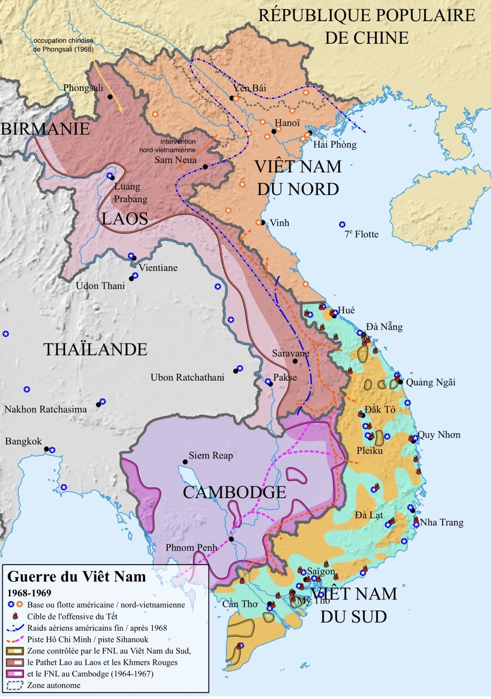
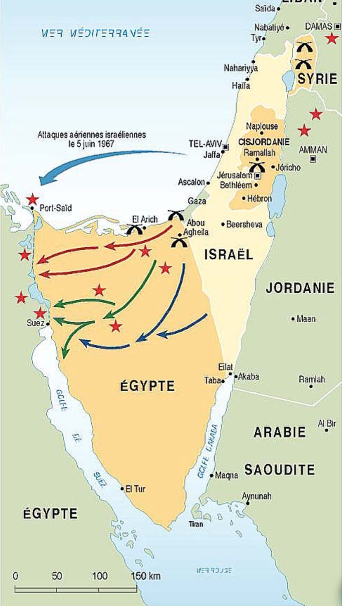
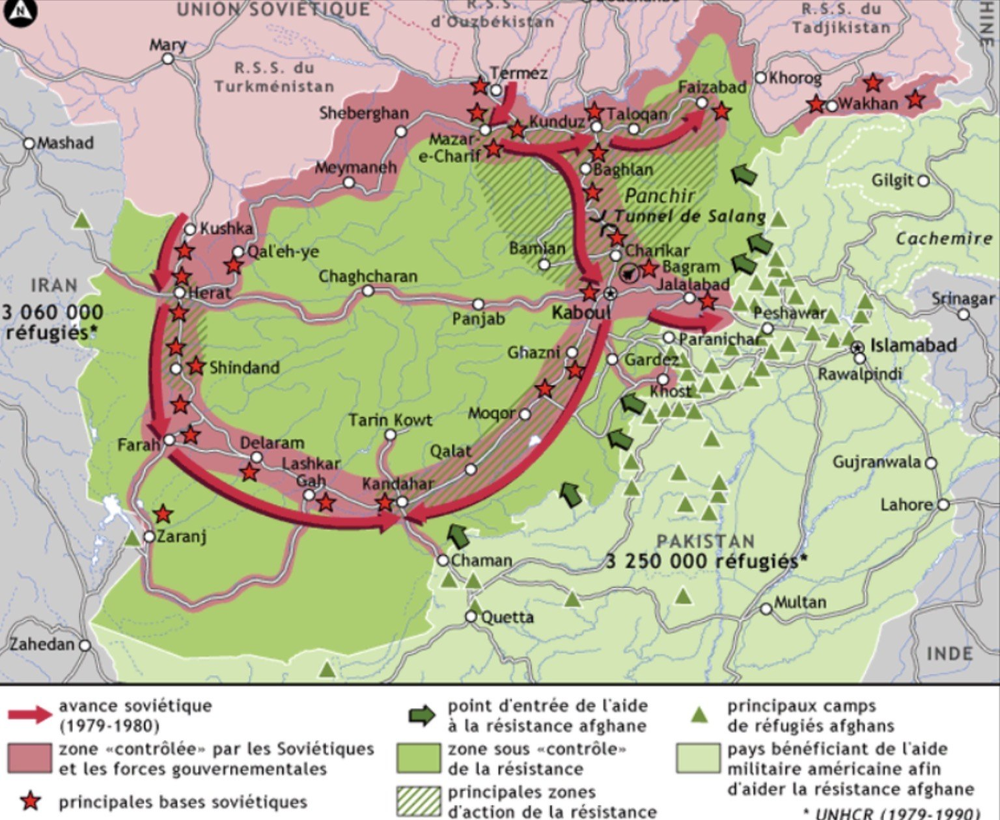

L'Art de la Guerre
de Sun Tzu
The Art of War
by Sun Tzu
Un traité de stratégie vieux de plus de 2 000 ans, toujours d'une actualité saisissante — de la cybersécurité à la négociation, du management à la politique.
A strategic treatise more than 2,000 years old, still strikingly relevant — from cybersecurity to negotiation, management and politics.
Sun Tzu (孫子, v. 544 – v. 496 av. J.-C.), général et stratège chinois de l'État de Wu, est traditionnellement considéré comme l'auteur de L'Art de la Guerre (孫子兵法). Ce traité de 13 chapitres enseigne la connaissance de soi et de l'adversaire, le choix du terrain, la tromperie, la concentration des forces et l'art de gagner sans combattre.
Sun Tzu (孫子, c. 544 – c. 496 BCE), Chinese general and strategist of the state of Wu, is traditionally regarded as the author of The Art of War (孫子兵法). This 13-chapter treatise teaches self-knowledge and knowledge of the adversary, choice of terrain, deception, concentration of forces, and the art of winning without fighting.
Aujourd'hui, ses principes illuminent la gestion des risques cyber, la négociation raisonnée, le leadership et la stratégie politique.
Today, his principles illuminate cyber risk management, principled negotiation, leadership and political strategy.
 ⤢
⤢
Théorie générale
General Theory
Les idées essentielles
Core ideas of The Art of War
02Cybersécurité
Cybersecurity
GRC et risque cyber
GRC and cyber risk
03Négociation
Negotiation
Rapport de force & valeur
Power balance & value
04Management
Leadership & organisation
Leadership & organisation
05Politique
Politics
Alliances & contexte
Alliances & context
06Cas historiques
Case studies
Les principes face à l'Histoire
Principles tested by History
07Futur de la guerre
Future of war
Défense mosaïque, Ormuz
Mosaic defence, Hormuz
01 Théorie générale de L'Art de la Guerre General Theory of The Art of War
L'Art de la Guerre est un traité sur la stratégie, la connaissance de l'adversaire et la maîtrise du conflit. Ses principes s'appliquent à la négociation, au management, à la politique et à la gestion des risques.
The Art of War is a treatise on strategy, knowledge of the adversary and mastery of conflict. Its principles apply to negotiation, management, politics and risk management.
Les idées essentielles
Essential ideas
La meilleure victoire est celle obtenue sans combattreThe best victory is the one obtained without fighting
La meilleure stratégie n'est pas celle qui gagne le plus de combats. C'est celle qui rend le combat inutile, ou qui permet de gagner avec un coût minimal.
The best strategy is not the one that wins the most battles. It is the one that makes the battle unnecessary, or that wins at minimal cost.
Connais-toi toi-même et connais ton adversaireKnow yourself and know your adversary
C'est probablement le principe fondamental.
This is probably the fundamental principle.
Se connaître soi-même
Knowing yourself
- ses forces
- ses faiblesses
- ses ressources
- ses limites
- ses dépendances
- sa capacité financière
- ses compétences
- sa capacité à tenir dans le temps
- son niveau de préparation
- ses marges de manœuvre
- ce que l'on est réellement prêt à perdre
- your strengths
- your weaknesses
- your resources
- your limits
- your dependencies
- your financial capacity
- your skills
- your ability to last over time
- your level of preparation
- your room for manoeuvre
- what you are really prepared to lose
Il faut surtout distinguer ce que l'on croit pouvoir faire de ce que l'on est réellement capable de faire.
Above all, distinguish what you believe you can do from what you are actually capable of doing.
Une entreprise pense pouvoir résister six mois à une cyberattaque majeure. Mais si elle découvre qu'elle dépend d'un prestataire critique, que ses sauvegardes ne sont pas testées et que ses procédures de crise sont théoriques, son « potentiel de résistance » est largement surestimé.
A company thinks it can withstand a major cyberattack for six months. But if it discovers that it depends on a critical provider, that its backups have never been tested and that its crisis procedures are only theoretical, its “resilience potential” is largely overestimated.
Connaître l'adversaire
Knowing the adversary
- ce qu'il veut
- ce qu'il refuse
- ce qui lui fait peur
- ses contraintes
- ses ressources
- ses dépendances
- ses intérêts
- ses alliances
- son calendrier
- ses vulnérabilités
- sa perception de vous
- what they want
- what they refuse
- what frightens them
- their constraints
- their resources
- their dependencies
- their interests
- their alliances
- their timeline
- their vulnerabilities
- how they perceive you
Et surtout : ne pas confondre ce que l'adversaire dit vouloir avec ce qu'il cherche réellement à obtenir.
And above all: do not confuse what the adversary says they want with what they are really trying to obtain.
La chaîne stratégique
The strategic chain
Une mauvaise information produit souvent une mauvaise stratégie.
Bad information often produces a bad strategy.
Le risk manager doit se demander : « Qu'est-ce que je sais réellement de mon risque ? Qu'est-ce que j'imagine seulement savoir ? »
The risk manager must ask: “What do I actually know about my risk? What do I only imagine I know?”
La guerre repose sur la tromperieAll warfare is based on deception
Cette idée est souvent mal comprise. Sun Tzu ne dit pas simplement : « mentez à votre adversaire ». Il dit essentiellement : ne donnez pas à l'adversaire une vision complète et exploitable de votre situation. L'information devient donc une ressource stratégique.
This idea is often misunderstood. Sun Tzu is not simply saying “lie to your adversary”. He is essentially saying: do not give the adversary a complete, exploitable picture of your situation. Information thus becomes a strategic resource.
Faire croire que l'on est faible peut pousser l'adversaire à attaquer trop tôt. Faire croire que l'on est proche peut l'amener à déplacer ses forces alors que l'on est encore loin.
Making the enemy believe you are weak may push them to attack too early. Making them believe you are close may lead them to move their forces while you are still far away.
Transposition moderne
Modern transposition
- ne pas exposer inutilement ses infrastructures
- réduire les informations disponibles publiquement
- segmenter son SI
- utiliser des leurres
- contrôler les informations révélées pendant une crise
- éviter de donner à un attaquant une cartographie complète de son environnement
- do not needlessly expose your infrastructure
- reduce the information publicly available
- segment your information system
- use decoys
- control the information disclosed during a crisis
- avoid giving an attacker a complete map of your environment
Vous n'avez pas nécessairement intérêt à révéler :
You do not necessarily benefit from revealing:
- votre budget maximal
- votre urgence
- votre solution de repli
- votre véritable calendrier
- votre point de rupture
- your maximum budget
- your urgency
- your fallback solution
- your real timeline
- your breaking point
Choisis le terrain du conflitChoose the ground of conflict
C'est un principe extrêmement puissant. Celui qui choisit :
This is an extremely powerful principle. Whoever chooses:
- le lieu
- le moment
- les règles
- le rythme
- le périmètre
- the place
- the moment
- the rules
- the pace
- the scope
possède souvent un avantage considérable.
often holds a considerable advantage.
Une petite force peut être vulnérable dans une plaine mais très efficace dans une montagne, une ville, un passage étroit ou un environnement difficile. La force brute devient alors moins importante.
A small force may be vulnerable on a plain but very effective in mountains, a city, a narrow pass or a difficult environment. Brute force then matters less.
Vous êtes candidat à un poste. Si vous acceptez uniquement le terrain choisi par le recruteur : « Pourquoi devriez-vous accepter notre salaire de 55 k€ ? » — vous êtes déjà placé sur son terrain.
You are a candidate for a job. If you only accept the ground chosen by the recruiter: “Why should you accept our salary of €55k?” — you are already on their ground.
Vous pouvez déplacer la discussion : « Avant de parler de rémunération, regardons le périmètre réel du poste, les responsabilités, les objectifs et le niveau de risque associé. » Vous avez changé le cadre de négociation.
You can shift the discussion: “Before talking about pay, let’s look at the real scope of the role, the responsibilities, the objectives and the level of associated risk.” You have changed the negotiation frame.
L'entreprise ne doit pas attendre que l'attaquant choisisse : « Quand allons-nous réagir ? » Elle doit avoir préparé :
The company must not wait for the attacker to decide: “When will we react?” It must have prepared:
- les scénarios
- les procédures
- les responsabilités
- les seuils d'escalade
- les moyens de communication
- les sauvegardes
- les plans de continuité
- scenarios
- procedures
- responsibilities
- escalation thresholds
- communication channels
- backups
- continuity plans
Elle choisit ainsi son terrain avant la crise.
It thus chooses its ground before the crisis.
Évite les affrontements inutilesAvoid unnecessary confrontations
C'est probablement l'une des idées les plus modernes de Sun Tzu. Gagner n'est pas forcément une victoire. Il faut mesurer :
This is probably one of Sun Tzu’s most modern ideas. Winning is not necessarily a victory. You must weigh:
Une victoire qui détruit vos ressources peut être une défaite stratégique.
A victory that destroys your resources can be a strategic defeat.
Vous pouvez gagner une bataille commerciale mais :
You can win a commercial battle but:
- perdre votre meilleur client
- détériorer votre réputation
- épuiser vos équipes
- engager une procédure juridique
- provoquer une réaction de votre concurrent
- lose your best client
- damage your reputation
- exhaust your teams
- trigger legal proceedings
- provoke a reaction from your competitor
Vous avez gagné l'affrontement, mais perdu la guerre.
You have won the confrontation but lost the war.
Une organisation peut décider de restaurer immédiatement tous ses systèmes. Mais si elle ne comprend pas l'origine de l'attaque, elle peut restaurer… un environnement toujours compromis.
An organisation may decide to restore all its systems immediately. But if it does not understand the origin of the attack, it may restore… an environment that is still compromised.
Parfois, ne pas agir immédiatement est une décision stratégique. Il faut distinguer : urgence ≠ précipitation.
Sometimes, not acting immediately is a strategic decision. One must distinguish: urgency ≠ haste.
Concentre tes forcesConcentrate your forces
Il ne faut pas chercher à être excellent partout. Il faut être décisif là où cela compte. Imaginez dix ressources disponibles :
Do not try to be excellent everywhere. Be decisive where it matters. Imagine ten available resources:
Une armée peut concentrer ses forces sur un point faible du dispositif adverse.
An army can concentrate its forces on a weak point in the enemy’s dispositions.
Une entreprise possède un budget limité. Elle pourrait acheter 15 outils, 10 solutions de sécurité, 8 plateformes. Mais elle peut obtenir davantage de résilience en renforçant trois domaines critiques :
A company has a limited budget. It could buy 15 tools, 10 security solutions, 8 platforms. But it can obtain more resilience by strengthening three critical areas:
- identitéidentity
- sauvegardesbackups
- systèmes critiquescritical systems
Sois adaptableBe adaptable
Une stratégie parfaite sur le papier peut devenir mauvaise lorsque la réalité change. Sun Tzu raisonne donc en boucle :
A strategy that is perfect on paper can become a bad one when reality changes. Sun Tzu therefore thinks in loops:
Ce qui fonctionne aujourd'hui peut devenir dangereux demain.
What works today may be dangerous tomorrow.
Vous avez prévu : scénario A → réponse A. Mais l'adversaire fait : scénario B.
You planned: scenario A → response A. But the adversary does: scenario B.
Une organisation rigide continue d'appliquer A. Une organisation adaptative change immédiatement.
A rigid organisation keeps applying A. An adaptive organisation changes immediately.
Un plan de réponse à incident doit être un cadre de décision, pas un scénario mécanique. Les attaquants changent. Les technologies changent. Les dépendances changent. Les réglementations changent. Les risques changent.
An incident response plan must be a decision framework, not a mechanical script. Attackers change. Technologies change. Dependencies change. Regulations change. Risks change.
La vitesse peut être déterminanteSpeed can be decisive
La vitesse est importante parce qu'elle réduit le temps laissé à l'adversaire. Mais il y a une nuance essentielle : la vitesse sans préparation produit des erreurs. Sun Tzu ne prône donc pas simplement la précipitation.
Speed matters because it reduces the time left to the adversary. But there is an essential nuance: speed without preparation produces mistakes. Sun Tzu does not simply advocate haste.
Trois vitesses à distinguer
Three kinds of speed
- Vitesse de décision — décider rapidement.
- Vitesse d'exécution — mettre rapidement la décision en œuvre.
- Vitesse d'adaptation — modifier rapidement la stratégie lorsque la situation change.
- Decision speed — deciding quickly.
- Execution speed — putting the decision into effect quickly.
- Adaptation speed — changing the strategy quickly when the situation changes.
Organisation AOrganisation A
Organisation BOrganisation B
La deuxième organisation possède un avantage stratégique. Pourquoi ? Parce qu'elle a préparé la décision avant que la crise arrive.
The second organisation has a strategic advantage. Why? Because it prepared the decision before the crisis arrived.
Utilise les forces de l'adversaire contre luiUse the adversary's strengths against them
C'est l'une des idées les plus subtiles. Une force peut devenir une faiblesse lorsqu'elle est poussée à l'excès.
This is one of the subtlest ideas. A strength can become a weakness when pushed to excess.
Un concurrent possède une énorme organisation. C'est une force. Mais cela peut également créer :
A competitor has a huge organisation. That is a strength. But it can also create:
- lenteur
- bureaucratie
- dépendance aux procédures
- difficulté à changer rapidement
- slowness
- bureaucracy
- dependence on procedures
- difficulty changing quickly
Une petite entreprise peut exploiter cette rigidité.
A small company can exploit this rigidity.
Autres exemples
Other examples
| SituationSituation | ForceStrength | ReversDownside |
|---|---|---|
| Entreprise très centraliséeHighly centralised company | Forte cohérenceStrong consistency | Faible agilitéLow agility |
| Entreprise très dépendante d'un fournisseurCompany highly dependent on one supplier | EfficacitéEfficiency | Vulnérabilité stratégiqueStrategic vulnerability |
| Adversaire très confiantVery confident adversary | Capacité de décisionDecision-making ability | Risque de sous-estimationRisk of underestimation |
Une organisation très automatisée peut être extrêmement efficace. Mais si un attaquant compromet le mécanisme d'automatisation, l'efficacité devient un multiplicateur de l'attaque.
A highly automated organisation can be extremely efficient. But if an attacker compromises the automation mechanism, efficiency becomes a multiplier of the attack.
La question devient donc : « Quelle force de mon adversaire crée également une dépendance exploitable ? »
The question therefore becomes: “Which strength of my adversary also creates an exploitable dependency?”
La logistique est aussi importante que le combatLogistics are as important as combat
C'est un principe fondamental. Une stratégie magnifique qui ne peut pas être exécutée ne vaut rien. Une armée doit disposer de :
This is a fundamental principle. A magnificent strategy that cannot be executed is worth nothing. An army needs:
- nourriture
- armes
- munitions
- transport
- communications
- renseignements
- soins
- maintenance
- food
- weapons
- ammunition
- transport
- communications
- intelligence
- medical care
- maintenance
Dans une entreprise, c'est la même chose.
In a company, it is the same.
Vous avez un excellent plan de réponse à incident. Mais :
You have an excellent incident response plan. But:
- personne ne connaît son rôle
- les contacts d'urgence sont obsolètes
- les sauvegardes ne sont pas testées
- les prestataires ne répondent pas
- les accès d'urgence ne fonctionnent pas
- personne n'a réalisé d'exercice
- nobody knows their role
- emergency contacts are out of date
- backups are untested
- providers do not respond
- emergency accesses do not work
- nobody has run an exercise
Votre stratégie existe dans un document. Mais elle n'existe pas réellement dans l'organisation.
Your strategy exists in a document. But it does not really exist in the organisation.
C'est une distinction fondamentale :
A fundamental distinction:
Un PCA peut être parfaitement rédigé et totalement inutile s'il n'est jamais testé.
A business continuity plan (BCP) can be perfectly written and totally useless if it is never tested.
La philosophie générale
The general philosophy
La boucle complète en 9 temps
The full loop in 9 steps
Les neuf principes ci-dessus peuvent finalement être réunis dans une seule boucle :
The nine principles above can finally be gathered into a single loop:
- CONNAÎTRE — Comprendre soi-même et l'environnement.KNOW — Understand yourself and the environment.
- OBSERVER — Collecter les informations pertinentes.OBSERVE — Collect the relevant information.
- ANTICIPER — Imaginer les scénarios possibles.ANTICIPATE — Imagine the possible scenarios.
- CHOISIR — Déterminer le terrain, le moment et les priorités.CHOOSE — Determine the ground, the timing and the priorities.
- CONCENTRER — Mettre les ressources là où elles produisent le plus d'effet.CONCENTRATE — Put resources where they produce the most effect.
- AGIR — Avec suffisamment de vitesse.ACT — With enough speed.
- S'ADAPTER — Modifier la stratégie en fonction de la réalité.ADAPT — Change the strategy according to reality.
- PRÉSERVER — Éviter les coûts inutiles.PRESERVE — Avoid unnecessary costs.
- DURER — Disposer de la logistique et des ressources nécessaires.LAST — Have the logistics and resources required.
Cherche à construire une situation dans laquelle il ne peut plus gagner. Seek to build a situation in which they can no longer win.
Transposition à la cybersécurité (aperçu)
Application to cybersecurity (overview)
| Sun Tzu | Cybersécurité | Cybersecurity |
|---|---|---|
| Connaître l'ennemiKnow the enemy | Threat intelligence | |
| Connaître son campKnow yourself | Cartographie SIAsset mapping | |
| Choisir le terrainChoose the ground | Réduire surface d'attaqueReduce attack surface | |
| ConcentrerConcentrate forces | Prioriser risques critiquesPrioritise critical risks | |
| TromperDeceive | honeypotsDeception | |
| AnticiperAnticipate | EBIOS RMThreat modeling | |
| Éviter le combatAvoid fighting | Prévention & résiliencePrevention & resilience | |
| S'adapterAdapt | Réponse à incidentIncident response | |
| LogistiqueLogistics | PCA/PRA, sauvegardesBCP/DRP, backups | |
| Victoire sans combatVictory without fighting | Empêcher l'incidentPrevent the incident |
02 L'Art de la Guerre appliqué à la cybersécurité The Art of War applied to cybersecurity
Transposition vers l'Enterprise Risk Management / Cyber Risk Management. L'idée centrale : passer de « combattre les menaces » à « façonner le risque pour que l'adversaire ne puisse pas produire l'effet recherché ».
A transposition to Enterprise Risk Management / Cyber Risk Management. The core idea: move from “fighting threats” to “shaping risk so that the adversary cannot produce the desired effect”.
Transformer L'Art de la Guerre en Art de la gestion du risqueTransforming The Art of War into the Art of risk management
| Sun Tzu | Stratégie du risque | Risk strategy |
|---|---|---|
| Connais ton ennemiKnow your enemy | Identifier menaces, scénarios, motivations | Identify threats, scenarios, motivations |
| Connais-toi toi-mêmeKnow yourself | Actifs, dépendances, vulnérabilités, résilience | Assets, dependencies, vulnerabilities, resilience |
| Choisis le terrainChoose the ground | Réduire l'exposition, accepter ou transférer | Reduce exposure, accept or transfer risk |
| Évite le combatAvoid fighting | Éviter les scénarios inacceptables | Avoid unacceptable risk scenarios |
| Concentre tes forcesConcentrate forces | Investir sur les risques prioritaires | Invest in priority risks |
| Trompe l'adversaireDeceive the adversary | Réduire les infos exploitables, cyberdéception | Reduce exploitable info, cyber deception |
| Sois imprévisibleBe unpredictable | Éviter les contrôles prévisibles, tester | Avoid predictable controls, test regularly |
| Utilise les forces de l'adversaireUse adversary's forces | Transformer contraintes en leviers | Turn constraints into resilience levers |
| Adapte-toiAdapt | Actualiser l'analyse du risque | Continuously update risk analysis |
| Gagne sans combattreWin without fighting | Empêcher l'impact majeur | Prevent major impact |
Le changement fondamentalThe fundamental shift
La gestion classique demande : « Quels contrôles mettre en place ? » L'approche Sun Tzu demande : « Quel événement pourrait réellement nous mettre en difficulté, et comment faire pour qu'il n'atteigne pas son objectif ? »
Classical management asks: “What controls should we put in place?” The Sun Tzu approach asks: “What event could really put us in difficulty, and how can we prevent it from achieving its objective?”
Exemple — une banqueExample — a bank
Approche traditionnelleTraditional approach
« Protéger Active Directory » → MFA, segmentation, PAM… Raisonnement en contrôles.
“Protect Active Directory” → MFA, segmentation, PAM… Control-centric reasoning.
Approche Sun TzuSun Tzu approach
Quel scénario stratégique empêcher ? Par exemple :
Which strategic scenario must be prevented? For example:
Quel est l'objectif réel de l'adversaire ? Pas nécessairement « voler des données » : ce peut être de créer une interruption suffisamment importante pour obtenir un avantage économique. On agit alors sur plusieurs dimensions :
What is the adversary’s real objective? Not necessarily “stealing data”: it may be to create an interruption large enough to gain an economic advantage. One then acts on several dimensions:
Formule pour le GRCA formula for GRC
La stratégie du risque consiste moins à supprimer toutes les menaces qu'à empêcher les scénarios critiques d'atteindre leurs objectifs. Risk strategy is less about eliminating all threats than about preventing critical scenarios from achieving their objectives.
- Niveau 1 — Menace : Qui ou quoi peut nous attaquer ?Level 1 — Threat : Who or what can attack us?
- Niveau 2 — Scénario : Comment produire un événement redouté ?Level 2 — Scenario : How could a dreaded event be produced?
- Niveau 3 — Objectif : Quel résultat empêcher absolument ?Level 3 — Objective : What outcome must we absolutely prevent?
Parallèle avec EBIOS RMParallel with EBIOS RM
Sun Tzu ajoute : « Où intervenir pour modifier le rapport de force avec le minimum de ressources ? » 100 vulnérabilités, mais seulement 5 chemins critiques → concentrer les ressources sur ces 5.
Sun Tzu adds: “Where should I intervene to change the balance of power with minimum resources?” 100 vulnerabilities, but only 5 critical paths → concentrate resources on those 5.
100 vulnérabilités · 5 chemins d'attaque critiques.
100 vulnerabilities · 5 critical attack paths.
Lecture « Sun Tzu » des cinq ateliers
A “Sun Tzu” reading of the five workshops
| Atelier EBIOS RMEBIOS RM workshop | Lecture Sun TzuSun Tzu reading |
|---|---|
| Atelier 1 — Cadrage et socle de sécuritéWorkshop 1 — Scope and security baseline | Connais-toi toi-même : valeurs métier, biens supports, événements redoutésKnow yourself: business values, supporting assets, dreaded events |
| Atelier 2 — Sources de risqueWorkshop 2 — Risk sources | Connais ton ennemi : couples source de risque / objectif viséKnow your enemy: pairs of risk source and targeted objective |
| Atelier 3 — Scénarios stratégiquesWorkshop 3 — Strategic scenarios | Choisis le terrain : chemins d'attaque à l'échelle de l'écosystèmeChoose the ground: attack paths across the ecosystem |
| Atelier 4 — Scénarios opérationnelsWorkshop 4 — Operational scenarios | Anticipe : modes opératoires de l'attaquantAnticipate: the attacker’s operating methods |
| Atelier 5 — Traitement du risqueWorkshop 5 — Risk treatment | Concentre tes forces, adapte-toi : choix des mesures, risque résiduel, suiviConcentrate forces, adapt: choice of measures, residual risk, follow-up |
Mise en correspondance proposée ici à titre d'interprétation : EBIOS RM ne se réclame pas de Sun Tzu. Source : ANSSI — La méthode EBIOS Risk Manager.
Mapping proposed here as an interpretation: EBIOS RM does not claim Sun Tzu. Source: ANSSI — The EBIOS Risk Manager method.
Définition de la résilienceDefinition of resilience
Exemple : un ransomware
Example: a ransomware
Sans barrières, la chaîne d'attaque va jusqu'au bout. Avec elles, chaque maillon coupé empêche l'attaquant d'atteindre l'effet recherché :
Without barriers, the attack chain runs to the end. With them, each severed link stops the attacker from reaching the desired effect:
- 1. AttaqueAttack
- 2. CompromissionCompromise
- 3. PropagationPropagationBarrièreBarrier · SegmentationSegmentation
- 4. ChiffrementEncryptionBarrièreBarrier · Sauvegardes immuablesImmutable backups
- 5. IndisponibilitéUnavailabilityBarrièreBarrier · Procédures de crise + infrastructure de secoursCrisis procedures + fallback infrastructure
L'attaquant gagne peut-être une bataille technique. Mais il perd la bataille stratégique.
The attacker may win a technical battle. But loses the strategic one.
Matrice « Sun Tzu du risque »“Sun Tzu of risk” matrix
| Question stratégique | Strategic question | Question GRC | GRC question |
|---|---|---|---|
| Qui est l'adversaire ? | Who is the adversary? | Quelle source de risque ? | What risk source? |
| Que veut-il obtenir ? | What does he want? | Quel objectif / impact ? | What objective / impact? |
| Que protégeons-nous ? | What do we protect? | Quelles valeurs métier ? | What business values? |
| Où sommes-nous faibles ? | Where are we weak? | Vulnérabilités / dépendances | Vulnerabilities / dependencies |
| Où agir ? | Where to act? | Quelles barrières ? | What barriers? |
| Où concentrer ? | Where to concentrate? | Risques prioritaires | Priority risks |
| Si une barrière tombe ? | If a barrier falls? | Quelle résilience ? | What resilience? |
| Comment réagir à l'imprévu ? | How to react to the unexpected? | Capacité de réponse | Response capability |
| Gagner sans combattre ? | Win without fighting? | Rendre le scénario inopérant | Make the scenario inoperative |
« La gestion stratégique du risque ne consiste pas à éliminer toutes les menaces. Elle consiste à comprendre les scénarios qui peuvent réellement compromettre les objectifs de l'organisation et à concentrer les moyens là où ils permettent d'empêcher, contenir ou neutraliser leur effet. » “Strategic risk management is not about eliminating all threats. It is about understanding the scenarios that can truly compromise the organisation's objectives and concentrating resources where they prevent, contain or neutralise their effect.”
Une grille de raisonnementA reasoning grid
Ce n'est pas une formule mathématique universelle : c'est une grille de raisonnement.Strategic risk = threat capability × exposure × vulnerability × impact − control and resilience capability.
This is not a universal mathematical formula: it is a reasoning grid.
03 L'Art de la Guerre appliqué à la négociation The Art of War applied to negotiation
« Guerre » = gestion d'un rapport de force, non manipulation. Ne pas écraser l'autre, mais construire une situation où un accord devient préférable au conflit pour les deux parties.
“War” = managing a balance of power, not manipulation. Do not crush the other party, but build a situation in which agreement becomes preferable to conflict for both sides.
Les 10 principes
The 10 principles
| Sun Tzu | Négociation | Negotiation |
|---|---|---|
| Connais ton ennemiKnow your enemy | Intérêts, contraintes, objectifs de l'autre | Interests, constraints, objectives of the other |
| Connais-toi toi-mêmeKnow yourself | Objectifs, limites, alternatives, pouvoir réel (BATNA) | Objectives, limits, alternatives, real power (BATNA) |
| Choisis le terrainChoose the ground | Lieu, moment, format, personnes | Place, time, format, people present |
| Ne combats pas inutilementDo not fight unnecessarily | Ne transforme pas chaque désaccord en confrontation | Do not turn every disagreement into confrontation |
| Concentre tes forcesConcentrate forces | Les 1–2 points réellement décisifs | The 1–2 truly decisive points |
| Ne révèle pas toutDo not reveal everything | BATNA, prix minimum, contraintes | BATNA, minimum price, constraints |
| Utilise l'informationUse information | Pose plus de questions que tu ne donnes d'infos | Ask more questions than you give information |
| Sois adaptableBe adaptable | Change selon les réactions | Change strategy according to reactions |
| Évite les positions rigidesAvoid rigid positions | Négocie les intérêts, pas les positions | Negotiate interests, not positions |
| Gagne sans combattreWin without fighting | Accord = meilleure option pour l'autre | Make agreement the best option for the other |
Points clés
Key points
1. Connais ton adversaire — Qu'est-ce qui est important pour lui ? Objectif, contraintes, calendrier, alternatives, urgence, qui décide.
1. Know your adversary — What is important to them? Objective, constraints, timeline, alternatives, urgency, who decides.
2. Connais-toi toi-même — Idéal → acceptable → limite → alternative (BATNA). Sans alternative, le pouvoir est faible.
2. Know yourself — Ideal → acceptable → limit → alternative (BATNA). Without an alternative, power is weak.
3. Choisis le terrain — Déplacer le cadre : « Avant le prix, regardons le périmètre et les résultats attendus. »
3. Choose the ground — Shift the frame: “Before price, let’s look at scope and expected results.”
4. Ne négocie pas contre toi-même — ❌ « Je demande 80k, mais je pourrais accepter 72k. » → « Je me situe autour de 80k. » Puis silence.
4. Do not negotiate against yourself — ❌ “I ask 80k, but I could accept 72k.” → “I am around 80k.” Then silence.
5. Position → intérêt — « Nous ne pouvons pas dépasser 65k. » → « Qu'est-ce qui vous empêche ? » → explorer variable, prime, télétravail…
5. Position → interest — “We cannot go beyond 65k.” → “What prevents you?” → explore variable, bonus, remote work…
Exemple : préparer une négociation salariale
Example: preparing a salary negotiation
Le point crucial est le dernier : plus ton alternative est crédible, moins tu dépends de l'accord. « Je souhaite cet accord, mais je peux vivre avec son absence. »
The crucial point is the last one: the more credible your alternative, the less you depend on the deal. “I want this agreement, but I can live without it.”
04 L'Art de la Guerre appliqué au management The Art of War applied to management
Un bon manager ne gagne pas parce qu'il commande plus fort. Il gagne parce qu'il crée les conditions permettant à son équipe de réussir.
A good manager does not win because he commands louder. He wins because he creates the conditions that allow his team to succeed.
Les principes
The principles
| Sun Tzu | Management | |
|---|---|---|
| Connais-toi toi-mêmeKnow yourself | Forces, faiblesses, biais, limites | Strengths, weaknesses, biases, limits |
| Connais ton adversaireKnow the adversary | Marché, concurrents, parties prenantes | Market, competitors, stakeholders |
| Connais ton arméeKnow your army | Compétences, motivations, limites de l'équipe | Skills, motivations, team limits |
| Choisis le terrainChoose the ground | Environnement de travail favorable | Favourable working environment |
| Concentre tes forcesConcentrate forces | Prioriser : tout ne peut pas être urgent | Prioritise: not everything can be urgent |
| Évite les batailles inutilesAvoid useless battles | Éliminer conflits et réunions sans valeur | Eliminate valueless conflicts and meetings |
| Donne des objectifs clairsClear objectives | L'équipe doit savoir ce qu'elle vise | The team must know what it is aiming for |
| Sois adaptableBe adaptable | Modifier le plan si la situation change | Change the plan when the situation changes |
| Utilise l'informationUse information | Décider sur des faits, signaux faibles | Decide from facts, weak signals |
| Gagne sans combattreWin without fighting | Résoudre avant que cela devienne crise | Resolve before it becomes a crisis |
7 règles du management stratégique
7 rules of strategic management
- Connais ton équipe.Know your team.
- Donne une direction claire.Give a clear direction.
- Concentre les efforts.Concentrate efforts.
- Donne les moyens d'agir.Provide the means to act.
- Décentralise l'exécution.Decentralise execution.
- Observe avant d'agir.Observe before acting.
- Prépare l'équipe à l'imprévu.Prepare the team for the unexpected.
Intention stratégique → autonomie tactique
Strategic intent → tactical autonomy
Le dirigeant donne le pourquoi et le résultat attendu ; l'équipe détermine en partie le comment. Deux nuances : information ≠ surveillance (comprendre la situation, pas contrôler chaque geste) et discipline ≠ obéissance aveugle (tenir ses engagements, documenter, remonter les problèmes).
The leader gives the why and the expected outcome; the team partly decides the how. Two nuances: information ≠ surveillance (understand the situation, don't control every move) and discipline ≠ blind obedience (keep commitments, document, escalate problems).
05 L'Art de la Guerre appliqué à la politique The Art of War applied to politics
En politique, comme à la guerre, celui qui maîtrise le contexte peut avoir moins besoin de maîtriser la force.
In politics, as in war, the one who masters the context may need less to master force.
Les principes
The principles
| Sun Tzu | Application politique | Political application |
|---|---|---|
| Connais ton adversaireKnow your adversary | Intérêts, électeurs, contraintes, alliances | Interests, voters, constraints, alliances |
| Connais-toi toi-mêmeKnow yourself | Électorat, ressources, limites, divisions | Electorate, resources, limits, divisions |
| Choisis le terrainChoose the ground | Définir les sujets du débat | Define the subjects of debate |
| Choisis le momentChoose the moment | Quand proposer, négocier, se positionner | When to propose, negotiate, take a position |
| Concentre tes forcesConcentrate forces | Ne pas disperser le capital politique | Do not disperse political capital |
| Forme des alliancesForm alliances | Coalitions autour d'intérêts communs | Coalitions around common interests |
| Maîtrise l'informationMaster information | Connu, inconnu, contesté | Known, unknown, contested |
| Sois adaptableBe adaptable | Ajuster quand le contexte évolue | Adjust when the context evolves |
| Évite les batailles inutilesAvoid useless battles | Ne pas tout transformer en confrontation | Do not turn every disagreement into confrontation |
| Gagne sans combattreWin without fighting | Compromis ou décision sans confrontation ouverte | Compromise or decision without open confrontation |
Grille en 8 questions
8-question grid
- Quel est l'objectif ?What is the objective?
- Qui décide ?Who decides?
- Qui influence ?Who influences?
- Qui peut bloquer ?Who can block?
- Quels sont leurs intérêts ?What are their interests?
- Quel est le terrain du débat ?What is the ground of debate?
- Où concentrer les ressources ?Where to concentrate resources?
- Quelle est la sortie ?What is the exit?
Quatre domaines, une même idée
Four domains, one idea
| Sun Tzu → | Idée cléKey idea |
|---|---|
| RisqueRisk | Anticiper et réduire l'expositionAnticipate and reduce exposure |
| NégociationNegotiation | Comprendre les intérêts et maîtriser le rapport de forceUnderstand interests and master the balance of power |
| ManagementManagement | Organiser et concentrer les forcesOrganise and concentrate forces |
| PolitiquePolitics | Construire une coalition et maîtriser le contexte de décisionBuild a coalition and master the decision context |
06 Les principes de Sun Tzu à l'épreuve de l'Histoire Sun Tzu's principles put to the test of History
Une théorie ne vaut que si elle résiste à la réalité. Ici, chaque principe est démontré par une guerre ou une campagne réelle : ce n'est pas une chronologie militaire, c'est un laboratoire de stratégie.
A theory is only worth something if it survives reality. Here, each principle is demonstrated by a real war or campaign: this is not a military chronology, it is a strategy laboratory.
La méthode
The method
Pour chaque cas, on répond toujours à la même suite de questions :
For each case, the same sequence of questions is asked:
Quel principe, quel cas ?
Which principle, which case?
| Sun Tzu | Cas historique | Historical case | Ce que cela illustre | What it illustrates |
|---|---|---|---|---|
| Connais-toi toi-même et connais ton adversaireKnow yourself and know your adversary | 🇮🇱 Guerre des Six Jours, 1967🇮🇱 Six-Day War, 1967 | renseignement, préparation, connaissance des capacités adversesintelligence, preparation, knowledge of the adversary’s capabilities | ||
| La guerre repose sur la tromperieAll warfare is based on deception | 🇮🇱 Guerre des Six Jours🇮🇱 Six-Day War | surprise stratégique et camouflage des intentionsstrategic surprise and concealment of intentions | ||
| Choisis le terrain du conflitChoose the ground of conflict | 🇻🇳 Guerre du Vietnam🇻🇳 Vietnam War | jungle, guérilla, tunnels, adaptation au terrainjungle, guerrilla warfare, tunnels, adapting to terrain | ||
| La meilleure victoire est celle obtenue sans combattreThe best victory is the one obtained without fighting | 🇺🇸 Crise des missiles de Cuba🇺🇸 Cuban Missile Crisis | atteindre un objectif stratégique sans bataille directeachieving a strategic objective without direct battle | ||
| Concentre tes forcesConcentrate your forces | 🇮🇱 Six Jours🇮🇱 Six Days | concentration initiale de la puissance aérienneinitial concentration of air power | ||
| Frappe lorsque l'adversaire est vulnérableStrike when the adversary is vulnerable | 🇩🇪 France 1940🇩🇪 France 1940 | vitesse, surprise, concentration au point décisifspeed, surprise, concentration at the decisive point | ||
| Évite les forces de l'adversaire, attaque ses faiblessesAvoid the adversary’s strengths, attack his weaknesses | 🇫🇷 Dien Bien Phu🇫🇷 Dien Bien Phu | transformation du terrain en piègeturning the terrain into a trap | ||
| La force ne suffit pasForce is not enough | 🇺🇸 Vietnam🇺🇸 Vietnam | supériorité militaire ≠ victoire politiquemilitary superiority ≠ political victory | ||
| Connais le coût d'une guerre longueKnow the cost of a long war | 🇺🇸 Vietnam🇺🇸 Vietnam | usure, coût politique, économique et humainattrition, political, economic and human cost | ||
| S'adapter aux circonstancesAdapt to circumstances | 🇦🇫 Afghanistan, URSS 1979–1989🇦🇫 Afghanistan, USSR 1979–1989 | difficulté de vaincre une guérilla sur son terraindifficulty of defeating a guerrilla on its own ground | ||
| Ne combats pas selon les règles de l'adversaireDo not fight by the adversary’s rules | 🇦🇫 Afghanistan, États-Unis/OTAN🇦🇫 Afghanistan, US/NATO | asymétrie et guerre irrégulièreasymmetry and irregular warfare | ||
| L'information est une armeInformation is a weapon | 🇮🇱 Six Jours🇮🇱 Six Days | renseignement et surpriseintelligence and surprise | ||
| La victoire militaire ne garantit pas la victoire stratégiqueMilitary victory does not guarantee strategic victory | 🇺🇸 Irak 2003–2011🇺🇸 Iraq 2003–2011 | gagner la campagne ≠ stabiliser durablement le systèmewinning the campaign ≠ durably stabilising the system | ||
| Ne sous-estime jamais l'adversaireNever underestimate the adversary | 🇷🇺 Afghanistan / 🇺🇸 Vietnam🇷🇺 Afghanistan / 🇺🇸 Vietnam | asymétrie et erreurs de perceptionasymmetry and errors of perception | ||
| La politique fait partie de la guerrePolitics is part of war | 🇺🇸 Iran / Iran-Irak / Moyen-Orient🇺🇸 Iran / Iran–Iraq / Middle East | objectifs politiques derrière l'action militairepolitical objectives behind military action |
Douze études de casTwelve case studies
Chaque fiche suit la même architecture : carte, contexte, rapport de forces, principe de Sun Tzu, point décisif, ce qui a fonctionné ou échoué, contre-analyse, leçon, transposition. Les cartes sont ici décrites sous forme de parcours ; la version interactive viendra ensuite.Each file follows the same structure: map, context, balance of forces, Sun Tzu principle, decisive point, what worked or failed, counter-analysis, lesson, transposition. Maps are described here as routes; the interactive version will follow.
Guerre du VietnamVietnam War 1955–1975
CarteMap

ContexteContext
Nord-Vietnam et Viet Cong contre Sud-Vietnam, États-Unis et alliés. Objectif américain : empêcher la victoire communiste et soutenir le Sud. Objectif nord-vietnamien : réunifier le pays. Question : comment vaincre une puissance technologiquement supérieure sans la vaincre en bataille conventionnelle ?
La guerreThe war
Après la division du Vietnam, le Nord communiste cherche à réunifier le pays tandis que le Sud est soutenu par les États-Unis. Washington engage progressivement des forces considérables pour empêcher la victoire du Nord.
Les États-Unis disposent d’une supériorité militaire écrasante : aviation, hélicoptères, artillerie, marine et technologie.
Mais le Viet Cong et les forces nord-vietnamiennes refusent de livrer uniquement une guerre conventionnelle. Ils utilisent la jungle, les villages, les tunnels, les réseaux locaux et la dispersion.
L’objectif n’est pas nécessairement de détruire l’armée américaine. Il est de survivre, de maintenir la pression et de rendre la guerre progressivement plus coûteuse.
En 1968, l’offensive du Têt surprend les forces américaines et sud-vietnamiennes. Militairement, les forces communistes subissent de lourdes pertes, mais l’offensive démontre que la guerre est loin d’être terminée.
La confiance dans une victoire rapide s’effondre progressivement aux États-Unis.
Les forces américaines commencent à se retirer tandis que les combats continuent entre le Nord et le Sud.
En avril 1975, les forces nord-vietnamiennes entrent dans Saïgon. Le gouvernement sud-vietnamien s’effondre et le Vietnam est réunifié sous contrôle communiste.
Rapport de forcesBalance of forces
| Nord / Viet CongNorth / Viet Cong | USA / Sud-VietnamUSA / South Vietnam | |
|---|---|---|
| TechnologieTechnology | Inférieure (Nord/VC)Inferior (North/VC) | Très supérieure (USA)Far superior (USA) |
| AviationAir power | LimitéeLimited | Très supérieureFar superior |
| RenseignementIntelligence | Fort ancrage localStrong local roots | Technologie supérieureSuperior technology |
| TerrainTerrain | Très favorableVery favourable | DifficileDifficult |
| EnduranceEndurance | Très élevéeVery high | Plus limitée politiquementMore limited politically |
| ObjectifObjective | RéunificationReunification | ContainmentContainment |
Principe de Sun TzuSun Tzu’s principle
« Connais-toi toi-même et connais ton adversaire. »“Know yourself and know your adversary.”
Principes associés : terrain, adaptation, patience, guerre indirecte, enduranceAssociated principles: terrain, adaptation, patience, indirect warfare, endurance
Point historique décisifDecisive historical point
Offensive du Têt (1968).Tet Offensive (1968). Pertes communistes lourdes, mais impact politique et psychologique majeur : la guerre est loin d’être finie. Décision : transformer une faiblesse militaire en pression politique.Heavy communist losses, but a major political and psychological impact: the war is far from over. Decision: turn a military weakness into political pressure.
Ce qui a fonctionnéWhat worked
- connaissance du terrain
- réseaux locaux
- guérilla et tunnels
- patience
- remplacement des pertes
- pression politique
Ce qui a échouéWhat failed
- supériorité technologique non convertie en victoire politique
- dépendance aux indicateurs militaires
- contrôle durable du territoire
- sous-estimation de l’endurance adverse
Contre-analyseCounter-analysis
- définir les conditions de victoire
- limiter certains objectifs
- traiter les causes politiques
- bâtir une capacité sud-vietnamienne durable
TranspositionTransposition
- RisqueRisk : contrôler les symptômes sans traiter la cause
- CyberCyber : bloquer une attaque sans traiter la vulnérabilité structurelle
- NégociationNegotiation : obtenir une concession mais perdre l’objectif global
- ManagementManagement : optimiser les indicateurs en manquant l’objectif réel
- PolitiquePolitics : gagner une élection sans résoudre le problème qui l’a provoquée
Guerre des Six JoursSix-Day War 5–10 juin 19675–10 June 1967
CarteMap

ContexteContext
Israël contre Égypte, Jordanie et Syrie. Contexte : tensions régionales, mobilisation arabe, fermeture du détroit de Tiran par l’Égypte. Objectif israélien : neutraliser vite la menace et éviter une guerre longue.
La guerreThe war
En juin 1967, Israël se retrouve face à plusieurs adversaires : l’Égypte, la Jordanie et la Syrie. Une guerre longue sur plusieurs fronts serait extrêmement dangereuse.
Israël décide donc de ne pas attendre.
Le 5 juin au matin, l’aviation israélienne lance une attaque surprise contre les bases aériennes égyptiennes. Le moment est soigneusement choisi : une partie des appareils égyptiens est au sol et les équipages sont en phase de relève et de préparation.
Israël ne cherche pas simplement à être plus fort. Il cherche à empêcher l’adversaire d’utiliser sa force.
Une grande partie de l’aviation égyptienne est ainsi neutralisée au sol. Israël obtient rapidement la supériorité aérienne, puis concentre ses forces au sol dans le Sinaï.
La Jordanie entre dans les combats et Israël ouvre le front de Jérusalem et de Cisjordanie. Puis, le 9 juin, les forces israéliennes attaquent le Golan syrien.
En six jours, la situation stratégique du Moyen-Orient est profondément transformée.
Rapport de forcesBalance of forces
| IsraëlIsrael | États arabesArab states | |
|---|---|---|
| EffectifsManpower | Inférieurs globalementSmaller overall | Supérieurs globalementLarger overall |
| RenseignementIntelligence | Très développéHighly developed | Moins efficaceLess effective |
| MobilitéMobility | Très élevéeVery high | Plus lourdeHeavier |
| ObjectifObjective | Guerre courteShort war | Défense / pression régionaleDefence / regional pressure |
Principe de Sun TzuSun Tzu’s principle
« Frappez lorsque l’adversaire est vulnérable. »“Strike when the adversary is vulnerable.”
Principes associés : renseignement, surprise, timing, concentration, vitesseAssociated principles: intelligence, surprise, timing, concentration, speed
Point historique décisifDecisive historical point
5 juin, 7 h 45 : opération Moked. L’heure exploite les routines égyptiennes (retour des patrouilles, avions au sol, changement de rythme des équipages). Israël concentre l’essentiel de son aviation. Séquence : renseignement → moment → surprise → destruction au sol → supériorité aérienne → offensive terrestre.
Ce qui a fonctionnéWhat worked
- renseignement
- préparation
- connaissance des routines
- surprise
- concentration
- exploitation immédiate
Ce qui a échouéWhat failed
- avions vulnérables au sol
- dispersion insuffisante
- temps de réaction limité
- coordination insuffisante
- initiative non reprise
Contre-analyseCounter-analysis
- davantage de dispersion
- alerte renforcée
- avions mieux protégés
- décollage d’urgence
- meilleure coordination interarmées
TranspositionTransposition
- RisqueRisk : identifier les fenêtres de vulnérabilité
- CyberCyber : protéger maintenance, migration et changements de configuration
- NégociationNegotiation : repérer le moment où le levier change
- ManagementManagement : concentrer les moyens sur le facteur bloquant
- PolitiquePolitics : identifier les moments décisifs
Guerre soviéto-afghaneSoviet–Afghan War 1979–1989
CarteMap

ContexteContext
URSS et gouvernement afghan communiste contre les Moudjahidines. L’URSS intervient pour soutenir un gouvernement allié face à une insurrection. Objectif : maintenir un gouvernement favorable à Moscou.
La guerreThe war
En décembre 1979, l’Union soviétique intervient en Afghanistan pour soutenir un gouvernement communiste menacé par une insurrection.
L’armée soviétique dispose d’une puissance considérable et prend rapidement le contrôle des principales villes et des grands axes.
Mais les Moudjahidines évitent autant que possible les grandes batailles.
Ils utilisent les montagnes, les vallées et les réseaux locaux pour attaquer les forces soviétiques puis disparaître.
Plus la guerre dure, plus les Soviétiques doivent protéger leurs convois, leurs bases et leurs lignes de ravitaillement.
L’arrivée d’armes modernes fournies aux combattants afghans complique encore les opérations aériennes soviétiques.
Moscou comprend progressivement qu’une victoire militaire ne permet pas de contrôler durablement le pays.
Après près de dix ans de guerre, les dernières forces soviétiques quittent l’Afghanistan en février 1989.
Rapport de forcesBalance of forces
| URSSUSSR | MoudjahidinesMujahideen | |
|---|---|---|
| TechnologieTechnology | Très supérieure (URSS)Far superior (USSR) | InférieureInferior |
| RenseignementIntelligence | TechniqueTechnical | Humain / localHuman / local |
| TerrainTerrain | DéfavorableUnfavourable | Très favorableVery favourable |
| EnduranceEndurance | Limitée politiquementPolitically limited | Très élevéeVery high |
Principe de Sun TzuSun Tzu’s principle
« Celui qui connaît le terrain et sait l’utiliser possède un avantage décisif. »“Whoever knows the terrain and knows how to use it holds a decisive advantage.”
Principes associés : terrain, patience, adaptation, guerre indirecteAssociated principles: terrain, patience, adaptation, indirect warfare
Point historique décisifDecisive historical point
L’URSS prend les villes et contrôle les axes, mais contrôler les axes n’est pas contrôler les montagnes. Les Moudjahidines enchaînent montagnes → vallées → réseaux locaux → embuscades → sanctuaires extérieurs. La guerre devient une guerre d’usure.
Ce qui a fonctionnéWhat worked
- URSS : puissance aérienne, blindés, artillerie, contrôle des villes
- Moudjahidines : terrain, dispersion, connaissance locale, endurance
Ce qui a échouéWhat failed
- pas de contrôle politique durable
- coût croissant
- solution militaire de moins en moins décisive
Contre-analyseCounter-analysis
- limiter l’engagement
- réduire l’exposition en montagne
- privilégier la solution politique
- renforcer le gouvernement afghan
- chercher plus tôt une sortie
TranspositionTransposition
- RisqueRisk : ne pas confondre contrôle administratif et maîtrise réelle du risque
- CyberCyber : les meilleurs outils ne maîtrisent pas un environnement hostile
- ManagementManagement : une organisation ne se pilote pas que depuis son centre
Guerre d’AfghanistanWar in Afghanistan 2001–2021
CarteMap
À faire apparaître :To be shown: Kaboul, Kandahar, zones gouvernementales et d’insurrection, frontière pakistanaise, principales opérations, retrait international.Kabul, Kandahar, government and insurgent areas, Pakistani border, main operations, international withdrawal.
ContexteContext
États-Unis, alliés et gouvernement afghan contre Al-Qaïda puis surtout l’insurrection talibane. Après le 11 septembre 2001, objectif : éliminer les bases d’Al-Qaïda et renverser le régime taliban qui les accueillait.
La guerreThe war
Après les attentats du 11 septembre 2001, les États-Unis et leurs alliés interviennent en Afghanistan pour détruire les bases d’Al-Qaïda et renverser le régime taliban.
L’opération initiale est rapide. Les Taliban sont chassés du pouvoir et les forces occidentales installent un nouveau gouvernement à Kaboul.
Mais les Taliban ne disparaissent pas.
Ils se réorganisent, reprennent progressivement leurs attaques et exploitent les difficultés du nouvel État afghan.
La mission occidentale évolue alors : lutter contre Al-Qaïda, combattre les Taliban, reconstruire l’État, former une armée et sécuriser le pays.
La guerre devient progressivement une guerre d’usure.
En 2020, les États-Unis concluent un accord avec les Taliban prévoyant le retrait des forces étrangères.
En août 2021, les forces occidentales quittent le pays. Les Taliban avancent rapidement et prennent Kaboul le 15 août.
Après vingt ans de guerre, le mouvement renverse à nouveau le pouvoir afghan.
Rapport de forcesBalance of forces
| CoalitionCoalition | TalibansTaliban | |
|---|---|---|
| AviationAir power | Écrasante (coalition)Overwhelming (coalition) | Très limitéeVery limited |
| RenseignementIntelligence | Technique très supérieurFar superior technical means | Humain / localHuman / local |
| EnduranceEndurance | Limitée politiquementPolitically limited | Très élevéeVery high |
| ObjectifObjective | ÉvolutifEvolving | Reconquête du pouvoirRegaining power |
Principe de Sun TzuSun Tzu’s principle
« Sachez exactement ce que signifie la victoire. »“Know exactly what victory means.”
Principes associés : objectif politique, endurance, adaptation, sortieAssociated principles: political objective, endurance, adaptation, exit
Point historique décisifDecisive historical point
Le régime taliban tombe vite en 2001, mais l’insurrection reprend. L’objectif glisse : détruire Al-Qaïda → renverser les Talibans → sécuriser → construire un État → former une armée → négocier une sortie. Chacun exige une stratégie différente. En 2021, le retrait s’accompagne de l’effondrement rapide du gouvernement afghan et du retour des Talibans.
Ce qui a fonctionnéWhat worked
- intervention rapide
- supériorité aérienne
- renseignement
- opérations spéciales
Ce qui a échouéWhat failed
- définition évolutive de la victoire
- stabilité politique non construite
- dépendance à l’aide extérieure
- insurrection non éliminée
- sortie inacceptable
Contre-analyseCounter-analysis
- objectif final précis
- limiter l’intervention à Al-Qaïda ?
- réduire plus tôt l’engagement
- capacité autonome réelle
- préparer la sortie avant l’entrée
TranspositionTransposition
- RisqueRisk : définir le risque acceptable avant de lancer un programme
- CyberCyber : éradiquer une menace ≠ rendre l’organisation résiliente
- ManagementManagement : projet techniquement réussi mais objectif métier manqué
- NégociationNegotiation : un accord n’est pas une solution durable
Dien Bien PhuDien Bien Phu 13 mars – 7 mai 195413 March – 7 May 1954
CarteMap

ContexteContext
France contre Viet Minh. La France veut reprendre l’initiative en Indochine et attirer le Viet Minh dans une bataille décisive.
La guerreThe war
En 1954, la France cherche à provoquer une bataille décisive contre le Viet Minh.
Elle installe une importante base militaire dans la vallée de Diên Biên Phu, entourée de montagnes.
L’objectif est d’attirer les forces vietnamiennes dans une bataille où l’artillerie et l’aviation françaises doivent permettre de les détruire.
Mais le général Võ Nguyên Giáp décide d’accepter le combat tout en changeant ses conditions.
Les soldats vietnamiens transportent de l’artillerie dans les montagnes et installent progressivement des positions autour du camp français.
Le 13 mars, le Viet Minh lance son offensive. Les positions françaises sont progressivement encerclées et le ravitaillement aérien devient de plus en plus difficile.
Pendant près de deux mois, les combats transforment la vallée en champ de bataille.
Le 7 mai 1954, Diên Biên Phu tombe. La défaite française accélère la fin de la guerre d’Indochine.
Rapport de forcesBalance of forces
| FranceFrance | Viet Minh | |
|---|---|---|
| ArtillerieArtillery | ImportanteSubstantial | Plus importante qu’attenduGreater than expected |
| LogistiqueLogistics | Ravitaillement aérienAir resupply | Réseaux terrestresLand networks |
| TerrainTerrain | DéfavorableUnfavourable | Très favorableVery favourable |
| PositionPosition | Camp retranchéEntrenched camp | Hauteurs environnantesSurrounding heights |
Principe de Sun TzuSun Tzu’s principle
« Choisis le terrain du conflit. »“Choose the ground of conflict.”
Principes associés : Seconde leçon : celui qui choisit le terrain ne choisit pas nécessairement les conditions de la bataille.Associated principles: Second lesson: whoever chooses the ground does not necessarily choose the conditions of the battle.
Point historique décisifDecisive historical point
Le commandement français établit un camp retranché pour attirer le Viet Minh où sa puissance de feu doit être décisive. Giap prend les hauteurs, installe l’artillerie, creuse des tranchées et encercle le camp. La piste devient inutilisable, le ravitaillement aérien de plus en plus difficile. Le camp capitule le 7 mai 1954.
Ce qui a fonctionnéWhat worked
- France : puissance de feu, fortifications, aviation
- Viet Minh : terrain, artillerie, logistique terrestre, tranchées, encerclement, patience
Ce qui a échouéWhat failed
- ravitaillement aérien supposé tenable
- artillerie Viet Minh sous-estimée
- confiance excessive dans les fortifications
- piste au cœur du dispositif
- position isolée
Contre-analyseCounter-analysis
- position moins vulnérable à l’encerclement
- moindre dépendance au ravitaillement aérien
- renforcer les hauteurs
- anticiper la logistique Viet Minh
- éviter la bataille d’attrition
TranspositionTransposition
- RisqueRisk : une mesure de sécurité peut créer une dépendance critique
- CyberCyber : un système sécurisé dépendant d’un seul composant est un point de défaillance
- NégociationNegotiation : accepter le cadre de l’autre, c’est accepter ses règles
- ManagementManagement : une organisation très centralisée est fragile si son centre est neutralisé
- PolitiquePolitics : qui impose le cadre du débat possède déjà une part du rapport de forces
France 1940France 1940 10 mai – 22 juin 194010 May – 22 June 1940
CarteMap

ContexteContext
Allemagne contre France, Royaume-Uni, Belgique, Pays-Bas et Luxembourg. L’Allemagne veut vaincre vite et éviter une guerre d’usure comme en 1914–1918.
La guerreThe war
Le 10 mai 1940, l’Allemagne lance son offensive contre la France, la Belgique, les Pays-Bas et le Luxembourg.
Les forces franco-britanniques avancent rapidement vers la Belgique pour rencontrer l’armée allemande.
Mais le principal effort allemand passe ailleurs.
Les blindés allemands traversent les Ardennes, franchissent la Meuse près de Sedan et avancent rapidement vers l’ouest.
La percée allemande atteint la Manche et coupe les forces alliées engagées en Belgique de leurs arrières.
Des centaines de milliers de soldats se retrouvent encerclés autour de Dunkerque.
Une vaste évacuation maritime permet d’en sauver une grande partie, mais l’armée française reste profondément désorganisée.
Paris tombe le 14 juin et la France signe l’armistice le 22 juin 1940.
Rapport de forcesBalance of forces
| AllemagneGermany | AlliésAllies | |
|---|---|---|
| BlindésArmour | Très mobilesHighly mobile | Nombreux mais dispersésNumerous but dispersed |
| LogistiqueLogistics | Préparée pour l’offensivePrepared for the offensive | Plus rigideMore rigid |
| RenseignementIntelligence | BonGood | Partiellement trompéPartly deceived |
| TerrainTerrain | Exploité offensivementExploited offensively | Mal anticipéPoorly anticipated |
Principe de Sun TzuSun Tzu’s principle
« Ne laissez pas l’adversaire décider où aura lieu le combat. »“Do not let the adversary decide where the fight will take place.”
Principes associés : surprise, mobilité, concentration, tromperie, initiativeAssociated principles: surprise, mobility, concentration, deception, initiative
Point historique décisifDecisive historical point
Les Alliés pensent que l’effort principal passera par la Belgique et avancent vers le nord. L’effort allemand passe par les Ardennes, jugées difficiles pour une offensive blindée. La percée de Sedan franchit la Meuse et progresse vite vers l’ouest ; les forces avancées en Belgique sont coupées du reste du dispositif.
Ce qui a fonctionnéWhat worked
- concentration des blindés
- mobilité
- surprise opérative
- coordination air-sol
- exploitation de la rupture
Ce qui a échouéWhat failed
- axe principal mal anticipé
- dispositif rigide
- réaction trop lente à la percée
- commandement fragmenté
- front cohérent non reconstitué
Contre-analyseCounter-analysis
- surveiller les Ardennes
- garder des réserves mobiles
- contre-attaquer autour de Sedan
- meilleure coordination interarmées
TranspositionTransposition
- RisqueRisk : éviter le biais du scénario dominant
- CyberCyber : ne protéger que les vecteurs historiques laisse une nouvelle voie ouverte
- ManagementManagement : une organisation rigide ne réagit pas à une rupture
- NégociationNegotiation : analyser le cadre proposé avant de l’accepter
Irak 2003Iraq 2003 à partir du 20 mars 2003from 20 March 2003
CarteMap

ContexteContext
Coalition dirigée par les États-Unis contre l’Irak de Saddam Hussein, au motif notamment de la menace du régime et de ses programmes d’armes de destruction massive supposés. Objectif militaire : renverser vite le régime. Objectif politique : établir un nouvel ordre en Irak.
La guerreThe war
Le 20 mars 2003, une coalition dirigée par les États-Unis envahit l’Irak.
Les forces américaines et britanniques avancent rapidement depuis le Koweït vers le nord.
La supériorité aérienne, les blindés, les moyens de renseignement et la mobilité permettent de désorganiser rapidement les forces irakiennes.
Le 9 avril, Bagdad tombe et le régime de Saddam Hussein s’effondre.
Pourtant, la guerre ne s’arrête pas avec la chute de la capitale.
L’armée irakienne disparaît progressivement comme force organisée et une insurrection commence à se développer.
Des groupes armés attaquent les forces de la coalition tandis que les tensions confessionnelles plongent le pays dans une profonde instabilité.
La victoire militaire est donc rapide, mais la stabilisation de l’Irak devient une guerre beaucoup plus longue.
Rapport de forcesBalance of forces
| CoalitionCoalition | IrakIraq | |
|---|---|---|
| TechnologieTechnology | Très supérieureFar superior | InférieureInferior |
| AviationAir power | ÉcrasanteOverwhelming | Très limitéeVery limited |
| MobilitéMobility | Très élevéeVery high | FaibleWeak |
| ObjectifObjective | Renversement rapideRapid overthrow | Défense du régimeDefence of the regime |
Principe de Sun TzuSun Tzu’s principle
« La victoire militaire n’est pas nécessairement la victoire stratégique. »“Military victory is not necessarily strategic victory.”
Principes associés : objectif politique, sortie, exploitation de la victoireAssociated principles: political objective, exit, exploiting victory
Point historique décisifDecisive historical point
L’invasion commence le 20 mars, Bagdad tombe le 9 avril : victoire conventionnelle très rapide. Mais une seconde guerre commence : insurrection → violences sectaires → instabilité → reconstruction politique.
Ce qui a fonctionnéWhat worked
- supériorité aérienne
- renseignement
- mobilité
- logistique
- vitesse de progression
- concentration
Ce qui a échouéWhat failed
- anticipation de l’après-guerre
- stabilisation
- reconstruction politique
- maîtrise de l’insurrection
- lien victoire militaire / objectif politique
Contre-analyseCounter-analysis
- infrastructures
- services essentiels
- transition politique
- gestion des forces irakiennes
- prévention de l’insurrection
- calendrier de sortie
TranspositionTransposition
- RisqueRisk : réduire un risque sans prévoir le risque résiduel
- CyberCyber : éradiquer une compromission sans traiter persistance et reprise
- ManagementManagement : réussir un projet technique mais échouer sur l’adoption
Guerre des MalouinesFalklands War avril–juin 1982April–June 1982
CarteMap

ContexteContext
L’Argentine envahit les îles Falkland/Malouines qu’elle revendique ; le Royaume-Uni décide de les reprendre.
La guerreThe war
La guerre des Malouines illustre parfaitement un principe fondamental de la stratégie : ne pas confondre proximité géographique et capacité réelle à faire la guerre.
En avril 1982, l’Argentine possède un avantage géographique considérable. Les Malouines se trouvent à proximité de ses côtes, alors que le Royaume-Uni doit projeter ses forces à près de 12 000 kilomètres. Buenos Aires dispose en outre d’une aviation opérant depuis le continent et de forces déjà présentes dans les îles.
Mais cet avantage géographique ne signifie pas que l’Argentine possède nécessairement la capacité de mener une guerre victorieuse.
Le Royaume-Uni dispose d’une capacité de projection considérable, mais surtout d’une expérience historique de la projection et des opérations amphibies.
Une puissance qui possède une culture de la projection
Le Royaume-Uni n’improvise pas une opération amphibie en 1982.
La Royal Navy, les Royal Marines et les forces britanniques disposent d’une longue expérience des opérations expéditionnaires et des débarquements. Cette expérience s’est considérablement développée pendant la Seconde Guerre mondiale, avec les opérations amphibies en Afrique du Nord, en Italie, en Normandie et dans le Pacifique, puis avec les opérations menées dans les décennies suivantes.
Cette expérience ne signifie évidemment pas que les Malouines ressemblent à la Normandie. Le contexte, les distances et les moyens sont très différents.
Mais les Britanniques possèdent quelque chose de plus difficile à improviser qu’un équipement : une culture opérationnelle de la projection de forces à longue distance, de la coordination interarmées, de la guerre amphibie et de la logistique expéditionnaire.
C’est précisément ce qui devient déterminant en 1982.
La Grande-Bretagne doit transporter des hommes, des navires, des avions, des hélicoptères, du carburant, des munitions et des équipements à des milliers de kilomètres de ses bases. Elle doit ensuite les maintenir en état de combattre et transformer une flotte expéditionnaire en force terrestre capable de progresser jusqu’à Stanley.
La Task Force britannique démontre ainsi que la projection n’est pas seulement la capacité d’arriver quelque part : c’est la capacité d’y combattre une fois arrivé.
Mais l’Argentine fait très mal à la Task Force
Cette supériorité britannique ne doit surtout pas être exagérée.
L’Argentine inflige des pertes importantes aux forces britanniques.
Son aviation mène de nombreuses attaques à très basse altitude contre les bâtiments britanniques. Elle utilise notamment les missiles antinavires Exocet, fournis par la France avant le conflit.
Le 4 mai, un Exocet frappe le HMS Sheffield, qui finit par couler. Vingt membres d’équipage sont tués.
Le 25 mai, l’Atlantic Conveyor est également touché par des Exocet et est perdu. Le navire transportait notamment des hélicoptères et du matériel essentiel à la campagne terrestre.
Enfin, le 12 juin, un Exocet tiré depuis la terre atteint le HMS Glamorgan, qui survit à l’attaque mais est sérieusement endommagé.
L’Argentine démontre donc une chose essentielle : une force expéditionnaire extrêmement puissante peut rester vulnérable lorsqu’elle opère très loin de ses bases.
Le facteur français : quand une alliance industrielle devient un facteur militaire
La présence des Exocet donne également au conflit une dimension internationale.
L’Argentine utilise un système d’armes français contre une flotte britannique. La France se retrouve donc dans une situation particulièrement délicate : elle a fourni des équipements militaires à l’Argentine, tout en étant un allié occidental du Royaume-Uni.
La menace Exocet devient suffisamment préoccupante pour Londres pour que la question des livraisons françaises et des capacités argentines occupe une place importante dans les échanges avec les alliés.
François Mitterrand expliquera après le conflit que la France avait notamment retardé certaines livraisons d’Exocet à l’Argentine pendant la guerre.
La leçon stratégique est considérable :
un conflit peut être décidé par des capacités qui ne se trouvent pas directement sur le champ de bataille.
Le fournisseur d’une arme, le pays qui possède le renseignement technique permettant de la neutraliser ou l’allié capable de fournir une information déterminante peuvent devenir des acteurs indirects du rapport de forces.
Le Royaume-Uni bénéficie également de ses alliances
La Grande-Bretagne ne mène donc pas cette guerre complètement seule.
Les États-Unis apportent notamment un soutien en matière de renseignement, de communications, de météorologie et de logistique. Des documents américains déclassifiés indiquent que Washington fournit aux Britanniques des informations sur les capacités militaires argentines, leur ordre de bataille et leur efficacité opérationnelle probable. Les Britanniques bénéficient également d’un soutien satellitaire et de communications ainsi que de l’accès à certaines infrastructures américaines.
Cette coopération est particulièrement importante parce qu’une armée qui combat à 12 000 kilomètres de ses bases a besoin de savoir ce qui se passe à l’autre bout du monde.
Le renseignement réduit l’incertitude.
Et dans une guerre de projection, réduire l’incertitude permet de mieux employer une force qui est, par définition, éloignée de son territoire.
Le rôle de la Royal Air Force
La Royal Air Force joue alors un rôle beaucoup plus large que celui d’une simple force de bombardement.
Elle participe à la surveillance, à la reconnaissance, au transport, au ravitaillement en vol et aux frappes à longue distance.
Les appareils Nimrod assurent notamment des missions de reconnaissance maritime et de surveillance. Leur emploi nécessite lui-même une gigantesque chaîne logistique et de ravitaillement. Les documents de l’époque montrent que les Britanniques utilisent également les informations météorologiques et de renseignement fournies par les États-Unis pour améliorer leur connaissance de l’environnement opérationnel.
La RAF joue également un rôle spectaculaire avec les bombardiers Avro Vulcan.
Les opérations Black Buck permettent à la Grande-Bretagne de frapper l’aérodrome de Port Stanley depuis l’île de l’Ascension. La première mission, les 30 avril-1er mai, représente alors l’une des plus longues opérations de bombardement jamais réalisées en conditions de combat : le Vulcan doit parcourir environ 6 000 milles nautiques aller-retour et dépend d’une chaîne complexe de ravitaillements en vol.
Mais le renseignement joue également un rôle dans la lutte contre la menace argentine.
Le radar argentin de Port Stanley peut contribuer à détecter les mouvements des appareils britanniques et à fournir des informations utiles au ciblage des forces navales. Les Britanniques cherchent donc à neutraliser ces capacités de surveillance.
Deux des missions Black Buck utilisent finalement des missiles Shrike provenant des stocks américains contre des radars argentins.
La RAF participe ainsi à une véritable chaîne :
C’est cette chaîne qui donne toute sa valeur à l’aviation.
Le renseignement transforme la distance en problème gérable
C’est ici que l’aide américaine devient particulièrement intéressante pour notre principe stratégique.
Le Royaume-Uni se trouve très loin du théâtre d’opérations. Mais il ne combat pas dans le brouillard complet.
Les États-Unis fournissent des informations sur les capacités argentines, leur ordre de bataille, les conditions météorologiques et d’autres données utiles. Washington fournit également un soutien aux communications et à la logistique.
Il faut donc comprendre la projection britannique comme un système, et non comme une simple flotte traversant l’Atlantique.
La force britannique dispose :
C’est cette architecture qui permet à une puissance située à 12 000 kilomètres de son objectif de continuer à combattre.
San Carlos : transformer la projection en présence
Le 21 mai, les Britanniques débarquent à San Carlos et établissent une tête de pont.
C’est le véritable tournant.
Avant San Carlos, le Royaume-Uni doit essentiellement projeter sa puissance depuis la mer.
Après San Carlos, il dispose d’un point d’appui terrestre.
La projection devient alors occupation, ravitaillement, renforcement et progression terrestre.
Les Britanniques peuvent faire débarquer hommes et matériel, utiliser leurs hélicoptères et commencer à déplacer leur centre de gravité vers l’intérieur des îles.
La campagne se poursuit avec Goose Green puis l’avancée vers Stanley.
Le 14 juin 1982, les forces argentines capitulent.
Ce qui a réellement fait la différence
Les Malouines ne peuvent donc pas être résumées par :
« Le Royaume-Uni était plus puissant que l’Argentine. »
La réalité est beaucoup plus intéressante.
L’Argentine possède une capacité militaire réelle. Elle dispose d’une aviation dangereuse, d’une proximité géographique considérable et d’armes modernes capables d’infliger des pertes importantes à la Task Force.
Mais le Royaume-Uni possède un ensemble de capacités complémentaires :
- une expérience historique de la projection
- une expérience des opérations amphibies
- une marine capable de soutenir une opération très loin de ses bases
- une force aérienne capable d’opérer à très longue distance
- des capacités de ravitaillement en vol
- des moyens de reconnaissance et de surveillance
- une organisation logistique importante
- une capacité interarmées
- et surtout des alliances fournissant du renseignement, des communications, du soutien logistique et des facilités opérationnelles
La véritable erreur argentine
L’Argentine n’a donc pas été incapable de combattre.
Elle a montré qu’elle pouvait faire extrêmement mal à son adversaire.
Le problème stratégique est plutôt qu’elle n’a pas réussi à transformer ses avantages ponctuels en une capacité permettant d’empêcher la Grande-Bretagne de poursuivre sa campagne.
Elle pouvait frapper la Task Force.
Mais pouvait-elle empêcher la Task Force de débarquer ?
Elle pouvait couler des navires.
Mais pouvait-elle empêcher le Royaume-Uni de remplacer ses pertes et de poursuivre son opération ?
Elle pouvait exploiter la proximité du continent.
Mais pouvait-elle transformer cette proximité en supériorité opérationnelle durable ?
C’est ici que se situe la différence entre capacité tactique et capacité stratégique.
La leçon de Sun Tzu
La guerre des Malouines illustre donc parfaitement :
« Connais tes capacités réelles et celles de ton adversaire. »
Connaître ses capacités, ce n’est pas seulement compter ses avions, ses navires et ses soldats.
C’est connaître :
sa logistique, son expérience, son endurance, ses alliances, son renseignement, ses réserves, ses infrastructures et sa capacité à remplacer ses pertes.
Et connaître son adversaire, ce n’est pas seulement connaître son armement.
C’est comprendre :
son expérience, sa doctrine, sa capacité de projection, ses alliances et surtout sa capacité à continuer le combat après avoir subi des pertes.
L’Argentine a démontré qu’elle pouvait frapper durement la puissance britannique.
Le Royaume-Uni a démontré qu’il pouvait absorber ces coups, continuer à projeter sa puissance, établir une tête de pont et transformer progressivement cette projection en victoire terrestre.
C’est probablement la leçon stratégique la plus intéressante des Malouines :
l’important n’est pas seulement de savoir si l’on peut frapper l’adversaire. Il faut savoir si l’on peut encore atteindre son objectif après que l’adversaire vous aura frappé.
Rapport de forcesBalance of forces
| Royaume-UniUnited Kingdom | ArgentineArgentina | |
|---|---|---|
| LogistiqueLogistics | Très complexe mais maîtriséeVery complex but mastered | Plus proche géographiquementGeographically closer |
| ProjectionProjection | Très forteVery strong | Avantage de proximitéAdvantage of proximity |
| ObjectifObjective | Reprendre les îlesRetake the islands | Les conserverHold them |
Principe de Sun TzuSun Tzu’s principle
« Connais tes capacités réelles et celles de ton adversaire. »
Principes associés : projection, logistique, distance, enduranceAssociated principles: projection, logistics, distance, endurance
Point historique décisifDecisive historical point
L’Argentine a l’avantage géographique, le Royaume-Uni une capacité de projection considérable. La Task Force traverse l’Atlantique Sud, le débarquement de San Carlos établit une tête de pont, puis Goose Green et Stanley. La garnison argentine capitule le 14 juin.
Ce qui a fonctionnéWhat worked
- projection navale
- logistique
- débarquement
- coordination interarmées
- endurance
Ce qui a échouéWhat failed
- Argentine : détermination britannique sous-estimée
- difficultés logistiques
- proximité mal exploitée
- reconquête non empêchée
Contre-analyseCounter-analysis
- défendre les points de débarquement
- défense en profondeur
- exploiter l’avantage aérien
- perturber la logistique britannique
- solution diplomatique avant la tête de pont
TranspositionTransposition
- RisqueRisk : distinguer capacité nominale et capacité réellement disponible
- CyberCyber : posséder un outil ≠ disposer d’une capacité opérationnelle
- ManagementManagement : une compétence sur le papier doit être mobilisable au moment critique
Crise des missiles de CubaCuban Missile Crisis octobre 1962October 1962
CarteMap
À faire apparaître :To be shown: sites de missiles, rayon d’action, routes maritimes, ligne de quarantaine, bases américaines, Turquie et missiles Jupiter.missile sites, range, sea routes, quarantine line, American bases, Turkey and Jupiter missiles.
ContexteContext
En 1959, la révolution cubaine porte Fidel Castro au pouvoir. Rapidement, les relations entre Cuba et les États-Unis se détériorent. Washington considère l’installation d’un régime communiste allié à Moscou à quelques centaines de kilomètres des côtes américaines comme une menace stratégique majeure.
En avril 1961, l’échec du débarquement de la baie des Cochons renforce encore cette situation. La tentative soutenue par les États-Unis pour renverser Castro échoue.
Pour Cuba, la menace d’une nouvelle intervention américaine est désormais très concrète.
Pour l’Union soviétique, Cuba représente à la fois un allié idéologique et une position stratégique exceptionnelle dans les Caraïbes.
Nikita Khrouchtchev décide alors de prendre un risque considérable : installer secrètement à Cuba des missiles nucléaires capables d’atteindre une grande partie du territoire américain.
Mais la décision soviétique répond à plusieurs objectifs simultanés.
Il s’agit :
- de protéger le régime cubain
- de dissuader une nouvelle invasion américaine
- de renforcer la position stratégique soviétique
- de rapprocher la menace nucléaire du territoire américain
- et de répondre indirectement à la présence de missiles nucléaires américains Jupiter en Turquie, à proximité de l’URSS
La crise est donc déjà engagée avant même que Washington ne découvre les missiles.
La guerreThe war
1. Le secret soviétique
Au cours de l’été 1962, l’Union soviétique commence à transférer vers Cuba des missiles, des équipements militaires et des troupes.
L’opération est menée dans le secret.
Moscou espère installer les missiles avant que les États-Unis ne puissent réagir.
C’est un élément essentiel du raisonnement soviétique :
placer les armes rapidement, créer un fait accompli, puis obliger Washington à s’adapter à la nouvelle réalité.
Mais cette stratégie dépend d’une condition :
que les États-Unis ne découvrent pas immédiatement les installations.
2. Le renseignement change la donne
Le 14 octobre 1962, un avion américain U-2 photographie des installations soviétiques à Cuba.
Les photographies montrent notamment des sites permettant l’installation de missiles nucléaires.
Le 16 octobre, John F. Kennedy est informé de la situation.
À partir de ce moment, la crise entre dans une nouvelle phase.
Washington sait désormais que l’Union soviétique tente de modifier le rapport de forces nucléaire directement à proximité du territoire américain.
Mais Kennedy ne dispose pas d’une solution évidente.
Il doit choisir entre plusieurs options.
3. Les options américaines
Les conseillers du président étudient différentes possibilités.
Ne rien faire
Cette option permettrait d’éviter immédiatement une confrontation.
Mais elle laisserait les missiles soviétiques devenir opérationnels et pourrait être interprétée comme une acceptation du changement stratégique.
Attaquer les installations
Une attaque aérienne pourrait détruire une partie des missiles.
Mais elle comporte un problème majeur :
les États-Unis ne savent pas s’ils peuvent détruire toutes les armes soviétiques avant leur utilisation.
Envahir Cuba
L’armée américaine dispose d’une supériorité conventionnelle considérable.
Mais une invasion pourrait provoquer une riposte soviétique.
Le conflit pourrait également s’étendre à d’autres théâtres, notamment en Europe.
Négocier directement
Cela pourrait permettre une sortie pacifique.
Mais négocier sans exercer de pression pourrait laisser à Moscou l’impression que Washington accepte le fait accompli.
Exercer une pression militaire sans déclencher immédiatement la guerre
C’est finalement cette logique qui va être retenue.
4. Le choix de la « quarantaine »
Le 22 octobre, Kennedy s’adresse à la nation.
Il révèle publiquement la présence des missiles soviétiques à Cuba.
Mais il ne lance ni bombardement ni invasion.
Il annonce une quarantaine navale de Cuba.
Le choix du terme est important.
Washington évite le mot « blocus », qui aurait constitué juridiquement et politiquement une formulation beaucoup plus directement associée à un acte de guerre.
Les États-Unis vont donc utiliser leur puissance navale pour empêcher de nouvelles livraisons militaires soviétiques destinées à Cuba.
La logique est subtile :
montrer que les États-Unis sont prêts à employer la force sans franchir immédiatement le seuil de la guerre ouverte.
5. Le rapport de forces
La situation militaire globale est favorable aux États-Unis.
Washington dispose notamment d’une importante supériorité :
- nucléaire
- navale
- aérienne
- logistique
- conventionnelle autour de Cuba
Mais cette supériorité ne garantit absolument pas une victoire sans conséquences.
Car le problème n’est pas seulement :
« Qui est le plus puissant ? »
Le problème est :
« Que fera l’autre après le premier coup ? »
Une attaque américaine contre Cuba pourrait provoquer une réaction soviétique.
Une réaction soviétique pourrait provoquer une nouvelle réaction américaine.
Et chaque étape pourrait rapprocher les deux puissances du nucléaire.
La crise devient donc une lutte pour contrôler l’escalade.
6. Les navires soviétiques approchent
Les navires soviétiques transportant du matériel militaire se dirigent vers Cuba.
La marine américaine établit la ligne de quarantaine.
Le monde entier observe la confrontation.
Le risque est désormais très concret.
Un navire soviétique qui refuse de s’arrêter pourrait provoquer un affrontement.
Mais Washington ne veut pas nécessairement couler un navire soviétique.
Moscou ne veut pas non plus nécessairement provoquer une guerre générale.
Les deux camps se retrouvent donc dans une situation paradoxale :
chacun veut démontrer sa détermination sans être celui qui déclenche la guerre.
7. La crise monte
Pendant plusieurs jours, les deux gouvernements échangent des messages.
Kennedy doit également gérer plusieurs contraintes simultanément :
- l’opinion publique américaine
- les alliés européens
- l’OTAN
- la Turquie
- Cuba
- les militaires américains
- les dirigeants soviétiques
De son côté, Khrouchtchev doit tenir compte :
- de Cuba
- de son propre appareil militaire
- de la crédibilité soviétique
- de Berlin
- de l’équilibre nucléaire
- et du risque d’une guerre avec les États-Unis
La crise devient donc progressivement plus complexe.
Ce n’est plus simplement :
Washington contre Moscou.
C’est un système dans lequel plusieurs acteurs peuvent influencer l’évolution du conflit.
8. Le danger de la mauvaise interprétation
C’est probablement l’un des aspects les plus importants de la crise.
Dans une situation normale, un incident militaire peut être corrigé.
Dans une confrontation nucléaire, un incident peut devenir irréversible.
Un avion qui pénètre dans un espace aérien.
Un navire qui refuse de s’arrêter.
Un tir interprété comme une attaque.
Une unité militaire qui agit avant de recevoir de nouveaux ordres.
Chaque événement peut être interprété comme le début d’une offensive.
La difficulté pour les dirigeants n’est donc pas seulement de contrôler leurs propres décisions.
Ils doivent également contrôler la dynamique de la crise.
9. Les 26 et 27 octobre : le point critique
Les 26 et 27 octobre constituent le moment le plus dangereux de la crise.
Les communications entre Moscou et Washington deviennent particulièrement tendues.
Khrouchtchev propose notamment une solution dans laquelle l’Union soviétique retirerait ses missiles de Cuba en échange d’un engagement américain de ne pas envahir l’île.
Puis la question des missiles Jupiter américains stationnés en Turquie apparaît plus directement.
Pour Washington, cette question est extrêmement sensible.
Un accord public donnant l’impression que les États-Unis retirent leurs missiles sous pression soviétique pourrait être politiquement difficile à accepter.
Une solution doit donc être trouvée qui permette aux deux camps de sortir de la crise.
10. La porte de sortie
C’est ici que la lecture de Sun Tzu devient particulièrement intéressante.
Les États-Unis veulent que les missiles soviétiques disparaissent.
L’Union soviétique doit donc accepter de retirer ses missiles.
Mais si Moscou est placé dans une situation où le retrait signifie simplement :
« Nous avons été vaincus par les États-Unis »,
le risque de refus ou d’escalade augmente.
Il faut donc construire une autre possibilité.
Une possibilité dans laquelle les deux camps peuvent dire :
« Nous avons obtenu quelque chose. »
Les États-Unis obtiennent le retrait des missiles soviétiques.
L’Union soviétique obtient une garantie américaine de non-invasion de Cuba.
Et, dans le cadre secret de l’accord, les États-Unis acceptent de retirer ultérieurement leurs missiles Jupiter de Turquie.
11. Le 28 octobre
Le 28 octobre 1962, Khrouchtchev annonce que l’Union soviétique accepte de retirer les missiles de Cuba.
La crise commence alors à se dénouer.
Les missiles soviétiques sont finalement retirés.
Les États-Unis maintiennent leur engagement de ne pas envahir Cuba.
Les missiles Jupiter américains sont ensuite retirés de Turquie.
La guerre nucléaire n’a pas lieu.
12. Alors, qui a gagné ?
C’est précisément ici qu’il faut éviter une lecture trop simpliste.
Personne n’a remporté une victoire militaire.
Personne n’a capitulé.
Personne n’a détruit l’adversaire.
Les États-Unis obtiennent ce qu’ils considèrent comme leur objectif principal : le retrait des missiles soviétiques de Cuba.
Mais ils acceptent également de ne pas envahir Cuba et retirent leurs missiles Jupiter de Turquie.
L’Union soviétique retire ses missiles de Cuba.
Mais elle obtient la sécurité du régime cubain et le retrait des missiles américains de Turquie.
Cuba reste communiste et Castro reste au pouvoir.
La crise se termine donc davantage par un compromis stratégique sous forte contrainte que par une victoire classique.
13. Ce qui a réellement été évité
Le résultat le plus important n’est peut-être pas ce que l’un des deux camps a obtenu.
C’est ce qui n’est pas arrivé.
Il n’y a pas eu :
- d’invasion américaine de Cuba
- de guerre directe entre les États-Unis et l’URSS
- d’affrontement militaire généralisé
- d’utilisation d’armes nucléaires
Les deux puissances ont réussi à sortir d’une situation dans laquelle chacune possédait encore la capacité de continuer à faire monter la pression.
14. La logique de Sun Tzu
La crise de Cuba illustre alors une idée plus subtile que la simple « victoire sans combattre ».
Le but n’est pas toujours de faire capituler l’adversaire.
Parfois, le véritable objectif consiste à créer une situation dans laquelle les deux adversaires peuvent arrêter le conflit sans avoir besoin de se vaincre.
La stratégie consiste alors à combiner :
La force rend le compromis nécessaire.
La négociation rend le compromis possible.
Et la porte de sortie permet à l’adversaire de reculer sans devoir combattre jusqu’au bout.
Rapport de forcesBalance of forces
| États-UnisUnited States | URSSUSSR | |
|---|---|---|
| Arsenal nucléaireNuclear arsenal | Très importantVery large | Très importantVery large |
| RisqueRisk | Escalade nucléaireNuclear escalation | Escalade nucléaireNuclear escalation |
| ObjectifObjective | Retrait des missilesWithdrawal of the missiles | Maintenir Cuba et sa positionKeep Cuba and its position |
Principe de Sun TzuSun Tzu’s principle
« La meilleure victoire est celle qui est obtenue sans combattre. »“The best victory is the one obtained without fighting.”
Principes associés : dissuasion, escalade contrôlée, négociation, sortie, ambiguïtéAssociated principles: deterrence, controlled escalation, negotiation, exit, ambiguity
Point historique décisifDecisive historical point
Le 14 octobre, un U-2 photographie les installations. Le 22, les États-Unis annoncent une quarantaine navale plutôt qu’un bombardement ou une invasion. Sommet du danger les 26–27. Le 28, Khrouchtchev annonce le retrait des missiles ; les États-Unis s’engagent à ne pas envahir Cuba et retirent ensuite leurs Jupiter de Turquie.
Ce qui a fonctionnéWhat worked
- renseignement
- maîtrise de l’escalade
- options multiples
- pression militaire
- diplomatie secrète
- sortie laissée à l’adversaire
Ce qui aurait pu échouerWhat could have failed
Rien n’a échoué : l’objectif a été atteint sans guerre directe. Les risques étaient :Nothing failed: the objective was achieved without direct war. The risks were:
- attaque aérienne immédiateimmediate air strike
- invasioninvasion
- mauvaise lecture d’un mouvement soviétiquemisreading a Soviet move
- escalade incontrôléeuncontrolled escalation
- absence de canal diplomatiqueno diplomatic channel
Contre-analyseCounter-analysis
- une stratégie plus militaire était possible
- mais personne ne contrôlait la chaîne d’escalade après le premier tir
- monter la pression sans franchir le seuil irréversible
Offrir une porte de sortie respectable.
C’est peut-être l’enseignement le plus intéressant de Cuba.
Il ne s’agit pas de rechercher une victoire totale.
Il s’agit de construire une situation dans laquelle l’adversaire peut abandonner une position sans être obligé de transformer son recul en affrontement.
Et surtout :
Une stratégie réussie n’est pas toujours celle où quelqu’un gagne et quelqu’un perd. Parfois, c’est celle où chacun peut sortir du conflit sans avoir besoin de perdre.
Cuba devient ainsi un cas d’école pour l’Art de la guerre : la puissance sert à créer la possibilité du compromis, et le compromis sert à empêcher que la puissance ne conduise à la destruction.
TranspositionTransposition
- RisqueRisk : toujours conserver une voie de sortie
- CyberCyber : éviter qu’un incident limité devienne une crise systémique
- NégociationNegotiation : offrir une porte de sortie honorable
- ManagementManagement : ne pas rendre un désaccord irréversible
- PolitiquePolitics : garder des mécanismes de désescalade sous pression maximale
Guerre de CoréeKorean War 1950–1953
CarteMap
À faire apparaître :To be shown: phases : offensive nord-coréenne, contre-offensive ONU par Incheon, intervention chinoise, stabilisation autour du 38e parallèle.phases: North Korean offensive, UN counter-offensive through Inchon, Chinese intervention, stabilisation around the 38th parallel.
ContexteContext
Le 25 juin 1950, la Corée du Nord franchit le 38e parallèle. Les forces de l’ONU reprennent l’initiative, le débarquement d’Incheon prend l’adversaire à revers, la progression continue vers le nord, puis l’intervention chinoise change tout.
La guerreThe war
Le 25 juin 1950, la Corée du Nord envahit la Corée du Sud.
Les forces nord-coréennes avancent rapidement et s’emparent de Séoul.
Les forces sud-coréennes et américaines sont repoussées jusqu’au sud de la péninsule, autour du périmètre de Pusan.
En septembre, les forces de l’ONU lancent un débarquement spectaculaire à Incheon.
La manœuvre permet de reprendre Séoul et de repousser les forces nord-coréennes vers le nord.
Les forces de l’ONU franchissent ensuite le 38e parallèle et progressent vers la frontière chinoise.
La Chine intervient massivement et repousse les forces de l’ONU vers le sud.
Après plusieurs mois de combats, le front se stabilise autour du 38e parallèle.
Le 27 juillet 1953, un armistice met fin aux combats sans véritable traité de paix.
Rapport de forcesBalance of forces
| ONU / Corée du SudUN / South Korea | Corée du Nord / ChineNorth Korea / China | |
|---|---|---|
| AviationAir power | Supériorité importanteSignificant superiority | Plus limitéeMore limited |
| EffectifsManpower | ImportantsLarge | Très importantsVery large |
| LogistiqueLogistics | SupérieureSuperior | Forte capacité de masseStrong capacity for mass |
| Soutien extérieurExternal support | États-Unis / ONUUnited States / UN | Chine / URSSChina / USSR |
Principe de Sun TzuSun Tzu’s principle
Une victoire locale peut devenir une défaite stratégique.A local victory can become a strategic defeat.
Principes associés : mobilité, surprise, adaptation, limites de l’exploitation, négociationAssociated principles: mobility, surprise, adaptation, limits of exploitation, negotiation
Point historique décisifDecisive historical point
Incheon : opération spectaculaire derrière les lignes nord-coréennes. Mais l’autre point décisif est l’intervention chinoise : chaque victoire modifie l’environnement stratégique. La question devient « jusqu’où avancer sans provoquer une réaction plus dangereuse ? ». Armistice le 27 juillet 1953 (zone démilitarisée, pas de traité de paix).
Ce qui a fonctionnéWhat worked
- défense de Pusan
- débarquement d’Incheon
- mobilité
- puissance aérienne
- logistique
- adaptation
Ce qui a échouéWhat failed
- croire qu’une série de victoires tactiques mène à la victoire finale
- l’avancée vers le nord augmente le risque d’intervention chinoise
Contre-analyseCounter-analysis
- consolider les positions
- sécuriser la logistique
- évaluer la réaction chinoise
- limiter certains objectifs
- chercher plus tôt une solution politique
TranspositionTransposition
- RisqueRisk : une réduction de risque peut en créer un autre ailleurs
- CyberCyber : bloquer une attaque peut déplacer l’adversaire vers une autre surface
- NégociationNegotiation : un avantage obtenu ne justifie pas de demander immédiatement davantage
- ManagementManagement : une première réussite ne doit pas mener à une expansion incontrôlée
- PolitiquePolitics : chaque succès modifie les réactions des adversaires
Seconde Guerre mondialeSecond World War 1939–1945
CarteMap
À faire apparaître :To be shown: théâtres principaux, grandes offensives, guerre aérienne et navale, tournants stratégiques.main theatres, major offensives, air and naval war, strategic turning points.
ContexteContext
Non pas une campagne mais un système de guerres interconnectées (Europe occidentale, front de l’Est, Méditerranée, Atlantique, Afrique du Nord, Chine, Asie du Sud-Est, Pacifique) : les décisions sur un théâtre modifient les capacités disponibles ailleurs.
La guerreThe war
Le 1er septembre 1939, l’Allemagne envahit la Pologne. La France et le Royaume-Uni déclarent la guerre.
En 1940, l’armée allemande conquiert rapidement une grande partie de l’Europe occidentale.
En juin 1941, Hitler lance l’opération Barbarossa contre l’Union soviétique.
Quelques mois plus tard, le Japon attaque Pearl Harbor et les États-Unis entrent dans la guerre.
À partir de 1942, plusieurs événements commencent à inverser le rapport de forces : Midway dans le Pacifique, El-Alamein en Afrique du Nord et Stalingrad sur le front de l’Est.
En juin 1944, les Alliés débarquent en Normandie tandis que l’armée soviétique progresse depuis l’Est.
Berlin tombe en mai 1945 et l’Allemagne capitule.
Dans le Pacifique, les combats continuent jusqu’à la capitulation japonaise en septembre 1945.
Rapport de forcesBalance of forces
| AlliésAllies | AxeAxis | |
|---|---|---|
| IndustrieIndustry | Très supérieure à termeFar superior in the long run | ForteStrong |
| RessourcesResources | SupérieuresSuperior | ContraintesConstrained |
| LogistiqueLogistics | Avantage majeurMajor advantage | VulnérableVulnerable |
| AlliancesAlliances | Très largesVery broad | Plus limitéesMore limited |
| Profondeur stratégiqueStrategic depth | Très importanteVery large | Plus limitéeMore limited |
Principe de Sun TzuSun Tzu’s principle
La guerre ne se gagne pas uniquement sur le champ de bataille.War is not won on the battlefield alone.
Principes associés : ressources, alliances, industrie, logistique, renseignement, technologie, profondeur stratégiqueAssociated principles: resources, alliances, industry, logistics, intelligence, technology, strategic depth
Point historique décisifDecisive historical point
Pas de tournant unique. 1942–1943 : Midway, El-Alamein, Stalingrad. 1944 : Normandie, offensive soviétique, effondrement progressif de l’Allemagne. La victoire alliée résulte de l’accumulation de plusieurs avantages.
Ce qui a fonctionnéWhat worked
- Alliés : industrie, production de masse, maîtrise progressive des mers, renseignement, coordination, logistique, multiples fronts
Ce qui a échouéWhat failed
- surextension stratégique
- dispersion des forces
- dépendance à certaines ressources
- pertes non remplaçables
- fronts multiples
- profondeur industrielle adverse sous-estimée
Contre-analyseCounter-analysis
- éviter les guerres simultanées
- préserver les ressources
- limiter l’exposition logistique
- exploiter les divisions politiques adverses
- objectifs supérieurs aux moyens : le problème était systémique
TranspositionTransposition
- RisqueRisk : cartographier les dépendances critiques
- CyberCyber : serveurs, fournisseurs, identité, cloud, réseau, sauvegardes et humains forment un système
- ManagementManagement : une équipe performante échoue si ses dépendances sont fragiles
- PolitiquePolitics : une stratégie dépend des alliances et des ressources
- Entreprise : la résilience, c’est continuer à fonctionner malgré l’incident
Pearl Harbor et guerre du PacifiquePearl Harbor and the Pacific War 1941–1945
CarteMap
À faire apparaître :To be shown: expansion japonaise, offensive américaine, aviation, flotte, batailles décisives.Japanese expansion, American offensive, air power, fleet, decisive battles.
ContexteContext
Le 7 décembre 1941, le Japon attaque Pearl Harbor pour neutraliser une partie de la puissance navale américaine et poursuivre son expansion. La surprise est considérable, mais l’opération fait entrer pleinement les États-Unis dans la guerre.
La guerreThe war
Le 7 décembre 1941, l’aviation japonaise attaque Pearl Harbor à Hawaï.
L’attaque surprend les forces américaines et inflige de lourdes pertes à la flotte du Pacifique.
Le Japon poursuit alors son expansion et conquiert rapidement de nombreux territoires en Asie et dans le Pacifique.
Mais les États-Unis mobilisent leur industrie et commencent à reconstruire leurs forces.
En juin 1942, la bataille de Midway constitue un tournant majeur. La marine américaine inflige de lourdes pertes à la flotte japonaise.
Les États-Unis reprennent progressivement l’initiative avec Guadalcanal, les Philippines, Iwo Jima et Okinawa.
En 1945, les combats se rapprochent du Japon. Après Hiroshima, Nagasaki et l’entrée en guerre de l’Union soviétique contre le Japon, Tokyo accepte la capitulation.
Le 2 septembre 1945, le Japon signe officiellement sa reddition, mettant fin à la Seconde Guerre mondiale.
Rapport de forcesBalance of forces
| JaponJapan | États-UnisUnited States | |
|---|---|---|
| Surprise initialeInitial surprise | Très forte (Japon)Very strong (Japan) | FaibleWeak |
| IndustrieIndustry | InférieureInferior | ÉnormeEnormous |
| Production navaleNaval production | LimitéeLimited | MassiveMassive |
| LogistiqueLogistics | Vulnérable à long termeVulnerable in the long run | Très supérieureFar superior |
Principe de Sun TzuSun Tzu’s principle
La surprise doit servir un objectif stratégique.Surprise must serve a strategic objective.
Principes associés : surprise, initiative, objectifs stratégiques, profondeur industrielle, logistique, enduranceAssociated principles: surprise, initiative, strategic objectives, industrial depth, logistics, endurance
Point historique décisifDecisive historical point
Victoire tactique : détruire ou endommager une partie de la flotte ennemie. Victoire stratégique : modifier durablement le rapport de forces et atteindre l’objectif politique final. Pearl Harbor réussit sur le premier plan, pas le second. Midway (juin 1942) fait basculer la dynamique, puis Guadalcanal, Philippines, Iwo Jima, Okinawa.
Ce qui a fonctionnéWhat worked
- surprise
- préparation
- renseignement
- concentration
- aviation navale
- initiative initiale
Ce qui a échouéWhat failed
- succès tactique non transformé en stratégie durable
- puissance industrielle supérieure
- flotte reconstruite
- logistique américaine mondiale
- guerre longue qu’il fallait éviter
Contre-analyseCounter-analysis
- préserver les forces aéronavales
- éviter une guerre longue
- limiter les objectifs
- exploiter politiquement les gains
- solution diplomatique rapide (si les États-Unis acceptaient un compromis)
TranspositionTransposition
- RisqueRisk : neutraliser une menace visible en laissant la vulnérabilité structurelle
- CyberCyber : sauvegardes, segmentation, PRA, redondance limitent l’impact stratégique d’une attaque
- NégociationNegotiation : une concession spectaculaire peut détruire la relation nécessaire à la suite
- ManagementManagement : une décision brillante à court terme peut créer un problème plus grand
- PolitiquePolitics : une victoire médiatique n’est pas une victoire politique
Synthèse des trois derniers casSummary of the last three cases
| CasCase | Principe stratégiqueStrategic principle | Réussite / erreur centraleCentral success / error |
|---|---|---|
| CoréeKorea | Adapter sa stratégieAdapt your strategy | Une victoire peut provoquer une nouvelle menaceA victory can provoke a new threat |
| Seconde Guerre mondialeSecond World War | Penser en systèmeThink as a system | Industrie + logistique + alliancesIndustry + logistics + alliances |
| PacifiquePacific | Surprise ≠ victoire stratégiqueSurprise ≠ strategic victory | Pearl Harbor ne règle pas la guerrePearl Harbor does not settle the war |
07 Le futur de l’Art de la guerre : la défense mosaïque The future of the Art of War: mosaic defence
Iran, États-Unis et Israël : un laboratoire de la guerre du XXIᵉ siècle. La question n’est plus seulement « qui peut détruire qui ? » mais « qui peut continuer à fonctionner après avoir perdu une partie de son système ? ».
Iran, the United States and Israel: a laboratory of 21st-century war. The question is no longer only “who can destroy whom?” but “who can keep functioning after losing part of its system?”.
Le récit en bref
The story in brief
Face aux États-Unis et à Israël, l’Iran est nettement plus faible dans un affrontement conventionnel. Il ne cherche donc pas la bataille décisive : il répartit sa puissance sur plusieurs couches. Au centre, l’État et ses moyens ; autour, des partenaires régionaux et des groupes alliés ; plus loin, des puissances qui apportent profondeur stratégique, économique ou technologique (Russie, Chine, Corée du Nord) ou diplomatique (Pakistan). Ces liens sont des partenariats, non un bloc militaire.
La géographie multiplie l’effet : à Ormuz, puis à Bab-el-Mandeb avec les Houthis, une menace même partielle sur la navigation fait grimper le coût du pétrole, du transport et de l’assurance, et transforme une opération militaire en problème économique mondial. L’adversaire doit alors raisonner sur plusieurs théâtres à la fois.
Une campagne peut détruire beaucoup de capacités sans produire l’issue politique voulue : gagner la bataille n’est pas gagner la guerre. C’est la défense mosaïque, appliquée à la géopolitique. Elle suit Sun Tzu : éviter la force là où elle est la plus grande et penser la victoire avant le combat. Pour la GRC, la leçon est la résilience : ce qui compte, c’est que l’organisation continue de fonctionner après avoir perdu une partie de son système.
Facing the United States and Israel, Iran is clearly weaker in a conventional fight. It therefore does not seek the decisive battle: it spreads its power across several layers. At the centre, the state and its assets; around it, regional partners and allied groups; further out, powers that provide strategic, economic or technological depth (Russia, China, North Korea) or diplomatic depth (Pakistan). These ties are partnerships, not a military bloc.
Geography multiplies the effect: at Hormuz, then at Bab-el-Mandeb with the Houthis, even a partial threat to shipping raises the cost of oil, transport and insurance and turns a military operation into a global economic problem. The adversary must then reason across several theatres at once.
A campaign can destroy many capabilities without producing the intended political outcome: winning the battle is not winning the war. This is mosaic defence applied to geopolitics. It follows Sun Tzu: avoid strength where it is greatest and think about victory before the fight. For GRC, the lesson is resilience: what matters is that the organisation keeps functioning after losing part of its system.
Le problème stratégique de l’IranIran's strategic problem
Les États-Unis disposent d’une puissance aérienne, navale, spatiale et technologique sans équivalent régional ; Israël, d’une capacité militaire et de renseignement très développée. L’Iran est nettement plus faible dans une confrontation conventionnelle directe.
The United States has air, naval, space and technological power with no regional equivalent; Israel has highly developed military and intelligence capabilities. Iran is clearly weaker in a direct conventional confrontation.
Mais l’Iran ne cherche pas nécessairement à gagner cette guerre-là. Son problème est autre : empêcher une puissance supérieure de convertir sa supériorité militaire en victoire politique définitive.
But Iran does not necessarily seek to win that war. Its problem is different: to stop a superior power from converting military superiority into a final political victory.
C’est ici que Sun Tzu retrouve de l’actualité : il ne réduit pas la guerre à la destruction de l’armée adverse. La question devient : « dans quelles conditions cette puissance devient-elle difficile à utiliser ? »
This is where Sun Tzu regains relevance: he does not reduce war to destroying the enemy army. The question becomes: “under what conditions does this power become hard to use?”
La défense mosaïqueMosaic defence
La Mosaic Warfare, développée notamment par la DARPA, ne conçoit plus la puissance comme un ensemble de systèmes monolithiques mais comme des éléments multiples, distribués et recombinables : capteurs, drones, renseignement, commandement, armes, forces habitées et non habitées.
Mosaic Warfare, developed notably by DARPA, no longer sees power as a set of monolithic systems but as multiple, distributed, recombinable elements: sensors, drones, intelligence, command, weapons, crewed and uncrewed forces.
- Une partie du système peut être détruite, une autre prend le relais.
- Une configuration peut être remplacée par une autre.
- La puissance dépend moins d’un centre unique.
- Part of the system can be destroyed; another part takes over.
- One configuration can be replaced by another.
- Power depends less on a single centre.
Il existe une seconde lecture, non plus seulement militaire mais géopolitique : un système d’appuis, de relais et de points de pression répartis.
There is a second reading, no longer only military but geopolitical: a system of supports, relays and pressure points spread across a region.
L’Iran comme système distribuéIran as a distributed system
- L’État : missiles, drones, forces navales, renseignement, cyber, infrastructures, programme nucléaire.
- Les partenaires régionaux : groupes armés alliés ou alignés avec Téhéran, chacun avec ses intérêts et son autonomie.
- Les puissances extérieures : Russie, Chine et, dans certains domaines, Corée du Nord.
- La profondeur géographique : golfe Persique, mer d’Oman, Ormuz, mer Rouge, Bab-el-Mandeb.
- The state: missiles, drones, naval forces, intelligence, cyber, infrastructure, nuclear programme.
- Regional partners: armed groups allied or aligned with Tehran, each with its own interests and autonomy.
- External powers: Russia, China and, in some fields, North Korea.
- Geographic depth: Persian Gulf, Gulf of Oman, Hormuz, Red Sea, Bab-el-Mandeb.
Détruire une partie du système ne signifie pas le faire disparaître.
Destroying part of the system does not mean making it disappear.
Les profondeurs : Russie, Chine, Corée du Nord, PakistanDepth: Russia, China, North Korea, Pakistan
- Russie — profondeur stratégique. Le traité de partenariat stratégique de janvier 2025 prévoit coopération de sécurité et de défense, mais pas de défense mutuelle automatique. Elle apporte expérience (drones, guerre électronique, défense aérienne) et complique le calcul adverse.
- Chine — profondeur économique. Débouché majeur du pétrole iranien, présente dans les BRICS et l’OCS, elle réduit le risque d’isolement complet. Aucun engagement de défense.
- Corée du Nord — profondeur technologique. Relations anciennes dans les missiles ; circulation de savoir-faire entre États sanctionnés. Une capacité détruite se reconstruit plus vite si le savoir subsiste.
- Pakistan — profondeur diplomatique. Voisin et puissance nucléaire, en relation avec Washington, Pékin, Riyad et Téhéran : plus un canal et un facteur régional qu’un allié.
- Russia — strategic depth. The January 2025 strategic partnership treaty provides security and defence cooperation, but no automatic mutual defence. It brings experience (drones, electronic warfare, air defence) and complicates the adversary's calculation.
- China — economic depth. Major buyer of Iranian oil, present in BRICS and the SCO, it reduces the risk of complete isolation. No defence commitment.
- North Korea — technological depth. Long-standing missile ties; know-how circulating between sanctioned states. A destroyed capability is rebuilt faster if the knowledge survives.
- Pakistan — diplomatic depth. A neighbour and nuclear power with ties to Washington, Beijing, Riyadh and Tehran: more a channel and a regional factor than an ally.
Ormuz et Bab-el-Mandeb : les deux détroitsHormuz and Bab-el-Mandeb: two straits
Le détroit d’Ormuz est un passage extrêmement contraint. L’Iran peut en menacer la navigation (missiles, drones, moyens navals, mines). Le but n’est pas de détruire la marine américaine, mais de rendre l’environnement maritime assez dangereux pour augmenter le coût de l’engagement.
The Strait of Hormuz is an extremely narrow passage. Iran can threaten navigation there (missiles, drones, naval assets, mines). The aim is not to destroy the US Navy but to make the maritime environment dangerous enough to raise the cost of engagement.
À plusieurs milliers de kilomètres, Bab-el-Mandeb contrôle l’accès à la mer Rouge. Les Houthis, soutenus par l’Iran, ont montré qu’ils pouvaient menacer ce trafic avec des missiles et des drones. L’Iran n’a pas besoin de contrôler ce détroit : il suffit que l’adversaire ne puisse pas considérer la route comme totalement sûre.
Several thousand kilometres away, Bab-el-Mandeb controls access to the Red Sea. The Houthis, backed by Iran, have shown they can threaten this traffic with missiles and drones. Iran does not need to control the strait: it is enough that the adversary cannot treat the route as fully safe.
Deux chokepoints différents obligent une puissance supérieure à raisonner simultanément en termes militaires, énergétiques, commerciaux et diplomatiques.
Two different chokepoints force a superior power to reason simultaneously in military, energy, trade and diplomatic terms.
Deux détroits, plusieurs théâtresTwo straits, several theatres
| ÉlémentElement | Rôle dans la mosaïqueRole in the mosaic |
|---|---|
| Iran | OrmuzHormuz |
| Houthis | Bab-el-MandebBab-el-Mandeb |
| Irak | Profondeur terrestreLand depth |
| Liban | Frontière israélienneIsraeli border |
| Syrie | Profondeur régionaleRegional depth |
| Russie | Profondeur stratégiqueStrategic depth |
| Chine | Profondeur économique et diplomatiqueEconomic and diplomatic depth |
| Corée du Nord | Profondeur technologiqueTechnological depth |
| Pakistan | Profondeur géopolitique et diplomatiqueGeopolitical and diplomatic depth |
Chaque élément a ses intérêts et son autonomie. Mais l’effet global est net : l’adversaire doit considérer plusieurs théâtres à la fois. La cartographie exacte de ces relais varie selon les périodes et reste à vérifier dans les sources récentes.
Each element has its own interests and autonomy. But the overall effect is clear: the adversary must consider several theatres at once. The exact map of these relays changes over time and should be checked against recent sources.
Rendre la victoire difficileMaking victory difficult
Une puissance peut détruire une base, une usine, un missile, un navire. Mais si elle doit surveiller simultanément le Golfe, l’Irak, la Syrie, le Liban, la mer Rouge, ses bases, ses navires, ses chaînes logistiques et son environnement politique, sa puissance devient plus difficile à concentrer.
A power can destroy a base, a factory, a missile, a ship. But if it must simultaneously watch the Gulf, Iraq, Syria, Lebanon, the Red Sea, its bases, ships, supply chains and political environment, its power becomes harder to concentrate.
La question stratégique : et après ?
The strategic question: and then what?
- Si l’adversaire reconstruit ses capacités…
- Si ses réseaux survivent…
- Si ses partenaires continuent de l’approvisionner…
- Si ses routes commerciales restent ouvertes…
- Si ses relais peuvent ouvrir d’autres fronts…
- Si les coûts économiques augmentent…
- If the adversary rebuilds its capabilities…
- If its networks survive…
- If its partners keep supplying it…
- If its trade routes stay open…
- If its proxies can open other fronts…
- If economic costs keep rising…
…alors la victoire militaire peut ne pas produire la victoire politique recherchée : c’est la différence entre détruire la capacité de combat et obtenir l’état politique final souhaité.
…then military victory may not produce the intended political victory: the difference between destroying combat capacity and achieving the desired political end state.
Deux modèles de guerreTwo models of war
Avions très performants, missiles de précision, satellites, porte-avions. Cherche à détruire et la bataille décisive.
High-performance aircraft, precision missiles, satellites, carriers. Seeks destruction and the decisive battle.
Drones, missiles, réseaux, relais, partenaires, routes commerciales, cyber, diplomatie, points de pression. Cherche à survivre, se recomposer et imposer des coûts.
Drones, missiles, networks, proxies, partners, trade routes, cyber, diplomacy, pressure points. Seeks to survive, recompose and impose costs.
La puissance devient résilience, le territoire devient réseau, le front devient système, et la victoire devient une question de capacité à durer.
Power becomes resilience, territory becomes network, the front becomes a system, and victory becomes a matter of the ability to endure.
L’héritage de Sun Tzu : l’Art de la guerre 2.0Sun Tzu's legacy: Art of War 2.0
- Connaître son adversaire et son terrain.
- Éviter de combattre là où l’adversaire est le plus fort.
- Conserver l’initiative.
- Utiliser perception, incertitude et mobilité.
- Réfléchir à la victoire avant de commencer la bataille.
- Know your adversary and your terrain.
- Avoid fighting where the adversary is strongest.
- Keep the initiative.
- Use perception, uncertainty and mobility.
- Think about victory before starting the battle.
Au XXᵉ siècle : « qui possède l’armée la plus puissante ? » Au XXIᵉ : « quel système continue de fonctionner quand plusieurs de ses composants sont attaqués simultanément ? »
In the 20th century: “who has the most powerful army?” In the 21st: “which system keeps working when several of its components are attacked at once?”
Transposition
Transposition
- Cyber : résilience et reconstruction plutôt que prévention seule.
- Risque : éviter les points de défaillance uniques.
- Management : capacités distribuées, relais, plans de continuité.
- Cyber: resilience and recovery rather than prevention alone.
- Risk: avoid single points of failure.
- Management: distributed capabilities, relays, continuity plans.
Lien avec la GRC : la résilienceLink with GRC: resilience
La défense mosaïque est, en langage GRC, une stratégie de résilience : on ne cherche plus seulement à empêcher l’attaque, on s’assure que l’organisation continue de remplir sa mission lorsqu’une partie de son système est touchée.
Mosaic defence is, in GRC terms, a resilience strategy: the aim is no longer only to prevent the attack but to ensure the organisation keeps fulfilling its mission when part of its system is hit.
| Logique mosaïqueMosaic logic | Traduction en GRCGRC translation |
|---|---|
| Point de défaillance uniqueSingle point of failure | Cartographier les dépendances critiques (fournisseurs, SI, personnes) et les supprimer ou les doublerMap critical dependencies (suppliers, IT, people) and remove or duplicate them |
| Éléments distribués et recombinablesDistributed, recombinable elements | Redondance, segmentation, architectures et sites de repliRedundancy, segmentation, fallback architectures and sites |
| Une partie détruite, une autre prend le relaisOne part destroyed, another takes over | Plan de continuité (PCA) et de reprise (PRA), sauvegardes testées, gestion de criseBusiness continuity (BCP) and disaster recovery (DRP), tested backups, crisis management |
| Continuer à fonctionner après une perteKeep functioning after a loss | Fixer des objectifs de reprise (RTO/RPO) et une tolérance à l’impact par service essentielSet recovery objectives (RTO/RPO) and an impact tolerance for each essential service |
| Rendre la victoire adverse difficile à transformer en victoire stratégiqueMake the adversary's victory hard to turn into strategic victory | Rendre l’incident, même réussi pour l’attaquant, sans effet durable sur la missionMake an incident, even a successful one for the attacker, have no lasting effect on the mission |
| Plusieurs théâtres à surveillerSeveral theatres to watch | Un risque tiers, cyber, géopolitique et économique traité dans un même dispositifThird-party, cyber, geopolitical and economic risk handled in one framework |
Le cadre réglementaire va dans ce sens
The regulatory framework points the same way
- NIS2 : mesures de gestion des risques incluant continuité d’activité, gestion de crise et sécurité de la chaîne d’approvisionnement.
- DORA : résilience opérationnelle numérique des entités financières, tests et gestion des tiers TIC.
- ISO 22301 (continuité d’activité) et ISO 27001 (sécurité de l’information) : méthode pour structurer la résilience.
- Cycle identifier – protéger – détecter – répondre – rétablir : la résilience couvre aussi les deux derniers temps.
- NIS2: risk-management measures including business continuity, crisis management and supply-chain security.
- DORA: digital operational resilience for financial entities, testing and ICT third-party management.
- ISO 22301 (business continuity) and ISO 27001 (information security): methods to structure resilience.
- Identify – protect – detect – respond – recover cycle: resilience also covers the last two steps.
Exemple : un rançongiciel chiffre une partie du SI. L’attaquant a remporté la « bataille ». Si les sauvegardes sont isolées et testées, si les services essentiels reprennent dans les délais fixés et si la communication de crise est prête, la « guerre » n’est pas gagnée par l’attaquant.
Example: ransomware encrypts part of the IT estate. The attacker has won the “battle”. If backups are isolated and tested, essential services resume within the set deadlines and crisis communication is ready, the attacker has not won the “war”.